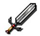

Programming
for CoffeeMud 4.6
Overview:
The purpose of this document is to assist those who wish to add custom Items, MOBs, Behaviors, Properties, or other objects to CoffeeMud. The reader should be familiar with Java programming, and should be experienced with writing and compiling Java classes. The object oriented notions of class inheretance and polymorphism, as well as the Java constructs of interfaces should be at least vaguely familiar to you before attempting to build classes for CoffeeMud. Also, it is expected that all of the ideas presented in the Archons Guide (ArchonGuide.html) are completely familiar. The difference between a GenItem and a StdItem, or a GenMob and a StdMOB will not be explained.
It is not expected that someone would wish to dive in and make wholesale changes to the CoffeeMud system right away, but is more likely wanting to fill in a functional gap in the system for their own needs. For this reason, this document is not organized as a comprehensive guide to programming CoffeeMud. Instead, it is designed to be a quick reference for those who wish to create the spot MOB, Behavior, Item, or Property for use on their maps.
With this in mind then, let's start out with some brief development instructions, and then and in no particular order, discuss the several essential object types in CoffeeMud are presented.

In Microsoft Windows:
In Unix:
Concerning External Components:
If you perused the coffeemud.ini file as mentioned in the Installation Guide, you may have noticed and wondered about the section at the end listing the default load paths for the several CoffeeMud objects.
By default, the CoffeeMud engine, using reflection, dynamically loads the vast majority of its object code at boot time by referring to the paths specified in the coffeemud.ini file. The value %DEFAULT% is always used as a substitute for the default CoffeeMud object path. For instance, if you installed CoffeeMud at "C:\CoffeeMud\", then "BEHAVIORS=%DEFAULT%" in the ini file would load "C:\CoffeeMud\com\planet_ink\coffee_mud\Behaviors\*.class" into its behavior set.
This default object boot paths may be removed, added to using semicolon delimited paths, or even replaced with your own object boot directories. In fact, when adding objects to your CoffeeMud boot sequence, it is recommended that you place your objects in a separate directory path and add it's path to the coffeemud.ini file under the proper setting.
When writing these custom classes for your special object boot directory(s), it is important to keep a number of things in mind.
1. Do not mix your object types in the same directory! Never try to boot custom items from the same directory from which you boot your custom mobs. It will only confuse you and CoffeeMud.
2. Do not package your custom classes! The keyword "package" should not appear anywhere in your custom classes.
3. Implement the proper interfaces. If you are coding mobs, implement the MOB interface. If you are coding locales, implement the Room interface, etc, etc. See the section on the object type you are coding for the proper interface to implement.
4. Make sure the ID() method in your classes always matches the name of your class. You will understand this better as you reference the object sections below.
5. Try to make the name() methods in your classes return name values unique among all objects, especially objects of that type. This is not a hard fast rule, and breaking it will not cause malfunction in the system, but it WILL make writing help files impossible.
6. In general, avoid putting your custom classes in the CoffeeMud classpath/package structure. This is because classes in the classpath, if changed, can not be reloaded using the LOAD command from inside the mud.
Before we get started with objects, needs must the topic of text display be covered. Throughout the system you will see text being sent to the user. Since a mud is a text producing engine, this should be no great suprise. However, within that text you will often see different kinds of codes and tags which affect the output. For instance, consider the following lines:
msg=new FullMsg(mob,target,this,affectType,"<S-NAME> reach(es) for <T-NAMESELF>."); mob.location().show(mob,null,CMMsg.MSG_OK_ACTION, "<S-NAME> regain(s) <S-HIS-HER> feet.");
Focusing only on the text for a moment, you will notice a that tags are used to designate a player name, or the name of the target of a spell. You will also notice that (s) and (es) is used to modify the proper form of a verb. These are key features of the CoffeeMud text engine. Here is a more complete list of available tage:
| <S-HIS-HER> | Outputs 'Your' if Observer=Source, otherwise 'His'/'Her'. |
| <S-HIM-HER> | Outputs 'You' if Observer=Source, otherwise 'Him'/'Her'. |
| <S-NAME> | Outputs 'You' if Observer=Source, otherwise the Name. |
| <S-NAMESELF> | Outputs 'Yourself' if Observer=Source, otherwise the Name |
| <S-HE-SHE> | Outputs 'You' if Observer=Source, otherwise 'He'/'She' |
| <S-IS-ARE> | Outputs 'Are' if Observer=Source, otherwise 'Is'. |
| <S-HAS-HAVE> | Outputs 'Have' if Observer=Source, otherwise 'Has'. |
| <S-YOUPOSS> | Outputs 'Your' if Observer=Source, otherwise the Name`s |
| <S-HIM-HERSELF> | Outputs 'Yourself' if Observer=Source, otherwise the 'Himself'/'Herself' |
| <S-HIS-HERSELF> | Outputs 'Yourself' if Observer=Source, otherwise the 'Hisself'/'Herself' |
| <T-HIS-HER> | Outputs 'You' if Observer=Target, otherwise 'His'/'Her'. |
| <T-HIM-HER> | Outputs 'You' if Observer=Target, otherwise 'Him'/'Her'. |
| <T-NAME> | Outputs 'You' if Observer=Target, otherwise the Name. |
| <T-NAMESELF> | Outputs 'Yourself' if Observer=Target, otherwise the Name |
| <T-HE-SHE> | Outputs 'You' if Observer=Target, otherwise 'He'/'She' |
| <T-IS-ARE> | Outputs 'Are' if Observer=Target, otherwise 'Is'. |
| <T-HAS-HAVE> | Outputs 'Have' if Observer=Target, otherwise 'Has'. |
| <T-YOUPOSS> | Outputs 'Your' if Observer=Target, otherwise the Name with an '`s' |
| <T-HIM-HERSELF> | Outputs 'Yourself' if Observer=Source, otherwise the 'Himself'/'Herself' |
| <T-HIS-HERSELF> | Outputs 'Yourself' if Observer=Source, otherwise the 'Hisself'/'Herself' |
Occasionally, you will find color/font codes embedded in system strings. For instance:
msg.append("^!You are thirsty.^?\n\r");
These codes, defined in the system.TelnetSession class, are as follows:
| ^N | Normal |
| ^! | Bold |
| ^H | Highlight |
| ^_ | Underline |
| ^* | Blink |
| ^/ | Italics |
| ^. | Reset (turns off reverse) |
| ^^ | Generates an untranslated "^" character |
| ^? | Restores previous color |
| ^F | Fight |
| ^S | Spell |
| ^E | Emote |
| ^T | Talk |
| ^Q | Channel Background |
| ^q | Channel Foreground |
| ^x | Important message 1 |
| ^X | Important message 2 |
| ^Z | Important message 3 |
| ^O | Room Title |
| ^L | Room Description |
| ^D | Direction |
| ^d | Door |
| ^I | Item |
| ^M | MOB |
| ^w | White |
| ^g | Green |
| ^b | Blue |
| ^r | Red |
| ^y | Yellow |
| ^c | Cyan |
| ^p | Purple |
| ^W | Dark White |
| ^G | Dark Green |
| ^B | Dark Blue |
| ^R | Dark Red |
| ^Y | Dark Yellow |
| ^C | Dark Cyan |
| ^P | Dark Purple |
| ^< | < character. Used for MXP tags only. |
| ^> | > character. Used for MXP tags only. |
| ^& | & character. Used for MXP tags only. |
As you might have guessed, it is preferred that the system colors (the last 16 codes) be used sparingly, in favor of the more customizable codes above.
Commands are exactly what they sound like: LOOK, QUIT, KILL, GET, and all the other things you type into the mud are handled by CoffeeMud Commands.
A Custom Command may or may not belong to any particular package, though it is important that the NAME of the Command be unique in the system. A custom Command must import the following packages:
import java.util.*; import com.planet_ink.coffee_mud.utils.*; import com.planet_ink.coffee_mud.interfaces.*; import com.planet_ink.coffee_mud.common.*;
As well as any other java.*, sun.*, or custom packages you may need. No other packages in the CoffeeMud system should be imported, other than those listed.
public class DoNothing extends StdCommand
{
public DoNothing(){}
private String[] access={"DONOTHING"};
public String[] getAccessWords(){return access;}
All Commands should extend StdCommand for conformity's sake, though it is not required so long as your class implements the com.planet_ink.coffee_mud.interfaces.Command interface. In our example above, we have an empty constructor, but we do define some access words.
Access words are what you think they are: the words which, when typed, allow the users to activate the command. We define a string array containing one such access word in this case, and then define our Command interface method getAccessWords() to return that array. Our String array may contain as many strings as you would need to provide sufficient words to activate this command.
public int compareTo(Object o)
{
return CMClass.classID(this).compareToIgnoreCase(CMClass.classID(o));
}
public int ticksToExecute(){return 0;}
public boolean canBeOrdered(){return true;}
Moving along, the first method above (compareTo) performs a string compatison based on the name of this command to make sorting the Command classes easier for the CMClass utility. For this reason, it should not be modified. In fact, I'm not sure why it isn't just left in the StdCommand base class.
The next method, ticksToExecute(), designates how LONG it takes to execute this command. A value of 0 means that the command always happens instantly, even in combat. A value of 1 would also be special. It means that, during combat, the command takes a full tick (4 seconds) to complete. In peace, however, the command will still happen instantly. A value greater than 1 will always take that many ticks to complete.
The canBeOrdered() command designates whether this command represents an action which a creature or player might reasonably be ordered to do by another player. Archons and those with the "ORDER" security code are exempt from this flag.
public boolean securityCheck(MOB mob)
{
return CMSecurity.isAllowed(mob,mob.location(),"IMMORT");
}
And speaking of security, this method returns whether or not the given mob may even have access to this command. If the securityCheck method returns false, the command and its access words will behave as if they do not even exist, returning "Huh?" should a player attempt to use it. Returning true, however, means only that the execute method below may be accessed. Any further security would have to be implemented there.
In the above example, we call the isAllowed method in CMSecurity with the mob reference, the room in which the mob is located, and the security code "IMMORT". This asks the Security module whether this mob, at this location, is authorized to perform functions designated by the "IMMORT" security code.
public boolean execute(MOB mob, Vector commands)
throws java.io.IOException
{
String parameters=Util.combine(commands,1);
if(parameters.length()==0)
mob.tell("Nothing done.");
else
mob.tell("Nothing, not even '"+parameters+"', done.");
return false;
}
}
Our last method is where the command actually does its work. The mob given would be the MOB object trying to execute this command, while commands is a Vector of parameters.
The parameter commands is never null, and by convention is a
Vector of strings starting with the access word used to execute the
command. For instance, if the user
entered:
donothing never "and always" never
The commands Vector would be size 4, and contain "donothing",
"never", "and always", and "never" respectively. In the case of this
command, we use one of the String utilities to recombine the last 3 parameters
back into one string "never and always never", and then issue a message to the
mob depending upon whether there were any parameters at all. Since this
command requires a command word to access it, it is reasonable to assume that
the 0th element in the commands vector is the word "donothing", which means we
can safely ignore it.
MOBs, or "Moveable OBjects", are the creatures and characters which the players fight. In CoffeeMud, they are among the simpler objects to code. This is not because they are uncomplex. In fact, they are the MOST complex. However, this complexity comes due to the myriad of Items, Behaviors, Properties, and Abilities that are added to them. Short of these numerous additions, a MOB by himself is rather simple!
This simplicity is important however, and should be carefully considered before you run off to create new MOBs. If you are creating a new MOB because you want a creature to have some new kind of ability, then are you sure it is not a new Ability you want to write? If the new MOBs behavior is complex and unique, are you sure it's not a new Behavior you wish to code?
If you are sure, then carry on! The directory for your custom coded MOB objects should be specified using the "MOBS" entry in the coffeemud.ini file. See the section above on Rebuilding CoffeeMud for more information on this feature.
Coding a new MOB:
A Custom MOB may or may not belong to any particular package, though it is important that the NAME of the MOB be unique in the system. A custom MOB must import the following packages:
import java.util.*; import com.planet_ink.coffee_mud.utils.*; import com.planet_ink.coffee_mud.interfaces.*; import com.planet_ink.coffee_mud.MOBS.*; import com.planet_ink.coffee_mud.common.*;
As well as any other java.*, sun.*, or custom packages you may need. No other packages in the CoffeeMud system should be imported, other than those listed.
A MOB class must extend either StdMOB or GenMob, StdShopKeeper or GenShopKeeper, StdRideable or GenRideable depending on the basic capabilities, and customizability you would like. Although Generic objects are more customizable at run-time, they also take a long time for the system to load and build, and take up a lot of database disk space. For this reason, using Standard instead of Generic whereever possible is always good.
Each MOB must also have a custom "ID()" method as shown below. Notice that the ID() is the same as the name of the class. This is no accident -- this is required!
public class MyNewMOB extends StdMOB
{
public String ID(){ return "MyNewMOB";}
public MyNewMOB()
{
super();
}
}
All of your customizing will be done inside the constructor: name, displayText, description, etc, etc.
public MyNewMOB()
{
super();
setName("a new mob");
setDescription("It`s furry with 2 legs");
setDisplayText("My new mob is standing here.");
Factions.setAlignment(this,Faction.ALIGN_NEUTRAL);
setMoney(0);
setWimpHitPoint(2);
baseEnvStats().setDamage(4);
baseEnvStats().setAbility(0);
baseEnvStats().setLevel(1);
baseEnvStats().setArmor(30);
baseEnvStats().setSpeed(1.0);
baseEnvStats().setAttackAdjustment(30);
baseEnvStats().setWeight(85);
baseEnvStats().setSensesMask(EnvStats.CAN_SEE_DARK|EnvStats.CAN_SEE_INFRARED);
baseEnvStats().setDisposition(EnvStats.IS_FLYING);
baseCharStats().setMyClass(CMClass.getCharClass("Fighter"));
baseCharStats().setMyRace(CMClass.getRace("Dog"));
baseCharStats().getMyRace().startRacing(this,false);
baseCharStats().setStat(CharStats.GENDER,(int)'F');
baseCharStats().setStat(CharStats.STRENGTH,18);
baseCharStats().setStat(CharStats.INTELLIGENCE,14);
baseCharStats().setStat(CharStats.WISDOM,13);
baseCharStats().setStat(CharStats.DEXTERITY,15);
baseCharStats().setStat(CharStats.CONSTITUTION,12);
baseCharStats().setStat(CharStats.CHARISMA,13);
baseCharStats().setStat(CharStats.SAVE_COLD,50);
baseState.setHitPoints(Dice.roll(baseEnvStats().level(),20,20));
baseState.setMana(Dice.roll(baseEnvStats().level(),50,100));
recoverMaxState();
resetToMaxState();
recoverEnvStats();
recoverCharStats();
}
You can see here that the basic stats have been filled out, from level to attack speed, alignment and weight. For numeric values, higher is always better, except for Armor, which is always best low, and comes down from 100. You'll notice above that two commands are required to set the Race of the creature. Also, you should realize that the numerous saving throws, and senses as well as dispositions (sneaking, hiding) are not represented above, but can easily be added using the format shown.
It is very important to note the last four commands. These commands "reset" the MOB, and "implement" the scores which are given in the several areas. "recoverEnvStats()", for instance, must be called whenever a change is made to the "baseEnvStats()" object. Ditto for "CharStats" and "MaxState".
Now, suppose we wanted to add an "Effect" or "Behavior" or "Ability" to your StdMOB. The proper place for such a statement would be in the same above constructor, among the other commands. Preferably before the several "recover" commands, but after the several stat definitions. Of course, all of this is unnecesssary for a new GenMOB object.
addNonUninvokableEffect(CMClass.getAbility("Fighter_Berzerk"));
Ability A=CMClass.getAbility("Prop_Resistance");
if(A!=null)
{
A.setMiscText( "Fire 200%" );
addNonUninvokableEffect(A);
}
addAbility(CMClass.getAbility("Poison"));
addBehavior(CMClass.getBehavior("MudChat"));
addBehavior(CMClass.getBehavior("Mobile"));
addBehavior(CMClass.getBehavior("CombatAbilities"));
The commands above will make the MOB permanently Berzerk, gives it the ability to Poison folks while in combat, allows the MOB to Chat with other players, and to walk around in its area. The last behavior gives the MOB the wisdom to use its Poison ability while in combat.
If your MOB extends StdShopKeeper , you will need to add your inventory manually. You will also need to specify the type of ShopKeeper.
setWhatIsSold(ShopKeeper.ONLYBASEINVENTORY);
Weapon sword=(Weapon)CMClass.getWeapon("Longsword");
addStoreInventory(sword,35);
Armor mail=(Armor)CMClass.getArmor("FullPlate");
addStoreInventory(mail,35);
Item waterskin=(Item)CMClass.getItem("Waterskin");
addStoreInventory(waterskin,35);
You'll recall from the Archon's Guide that there are many different types of ShopKeepers, including trainers, pet sellers, weaponsmiths, and others.
StdRideable MOBs will require a few other settings as well!
setRideBasis(Rideable.RIDEABLE_LAND); setMobCapacity(2);
The last thing is to give the MOB equipment, armor, and weapons. The following commands will do the trick!
Weapon sword=(Weapon)CMClass.getWeapon("Longsword");
addInventory(sword);
sword.wearIfPossible(this);
Armor mail=(Armor)CMClass.getArmor("FullPlate");
addInventory(mail);
mail.wearIfPossible(this);
Item sack=(Item)CMClass.getItem("StdContainer");
addInventory(sack);
Item waterskin=(Item)CMClass.getItem("Waterskin");
addInventory(waterskin);
waterskin.setContainer(sack);
And THAT's all there is to creating a new MOB. Easy, huh? Well, obviously, the real complexity of MOBs comes when the Behaviors and Abilities are programmed, but that is not covered here, of course.
Bringing MOBs to Life, and Taking That Life Away:
The following instructions are supplemental, and unnecessary. Once you have created your new MOB, modified your INI file, and rebooted your CoffeeMud server, you need only use the CREATE and other Archon commands to make use of him. If, for some reason, you want to know HOW these commands do their work, however, here it is.
To bring a MOB into existence, a MOB must have somewhere to exist! Presumably, this is some room on your map. Rooms on the map are classes which implement the interface "Room". If a MOB is to have a permanent existence, it must also have a starting room, or a place to rejuvinate into when necessary. If a MOB does not have a starting room, then its death, when that death comes, will be forever.
MOB mob=CMClass.getMOB("MyNewMOB");
Room room=CMMap.getRoom("Midgaard#3504");
mob.setStartRoom(room); // this mob will rejuvinate into this room.
mob.baseEnvStats().setRejuv(500); // 30 minutes rejuvination time
mob.recoverEnvStats(); // remember this command?!
mob.bringToLife(room,true); // tadah!
And THAT's all there is to bring a standard mob to life. Now, generic items require an additional step:
Item item=CMClass.getItem("GenItem");
Room room=CMMap.getRoom("Midgaard#3504");
item.text();
item.recoverEnvStats();
room.addItem(item);
room.recoverRoomStats();
The call to the text() method and the seemingly redundant call to Item.recoverEnvStats() (which we know is already in the item constructor), ensures that some of the internal structures of the Generic MOB are properly set. Of course, you may want to save this room to the database to make the situation permanent, but all of this is usually done from inside CoffeeMud using the CREATE, MODIFY, and DESTROY commands anyway. Speaking of destroy, destroying a mob for good is even easier than creating one:
Room room=CMMap.getRoom("Midgaard#3504");
for(int i=0;i<room.numInhabitants();i++)
{
MOB mob=room.fetchInhabitant(i);
mob.destroy();
}

A Custom Item may or may not belong to any particular package, though it is important that the NAME of the Item be unique in the system. A custom Item must import the following packages:
import java.util.*; import com.planet_ink.coffee_mud.utils.*; import com.planet_ink.coffee_mud.interfaces.*; import com.planet_ink.coffee_mud.Items.Basic.*; import com.planet_ink.coffee_mud.Items.Armor.*; import com.planet_ink.coffee_mud.Items.Weapons.*; import com.planet_ink.coffee_mud.Items.MiscMagic.*; import com.planet_ink.coffee_mud.common.*;
As well as any other java.*, sun.*, or custom packages you may need. No other packages in the CoffeeMud system should be imported, other than those listed.
An Item class must extend either StdItem or GenItem, StdWeapon or GenWeapon, StdRideable or GenRideable, StdArmor or GenArmor depending on the basic capabilities, and customizability you would like. Although Generic objects are more customizable at run-time, they also take a long time for the system to load and build, and take up a lot of database disk space. For this reason, using Standard instead of Generic whereever possible is always good.
Each Item must also have a custom ID() method as shown below. Notice that the ID() is the same as the name of the class. This is no accident -- this is required!
public class MyNewSword extends StdWeapon
{
public String ID(){ return "MyNewSword";}
public MyNewSword()
{
super();
}
}
All of your customizing will be done inside the constructor: name, displayText, description, etc, etc.
public MyNewSword()
{
super();
setName("a super sword");
setDescription("A long super duper sword!");
setDisplayText("Someone left their super sword here.");
setSecretIdentity("");
setMaterial(EnvResource.RESOURCE_STEEL);
setWeaponType(Weapon.TYPE_SLASHING);
setWeaponClassigication(Weapon.CLASS_SWORD);
setBaseValue(500);
baseEnvStats().setDisposition(EnvStats.IS_GLOWING);
baseEnvStats.setWeight(25);
baseEnvStats.setAttackAdjustment(10);
baseEnvStats.setDamage(15);
recoverEnvStats();
}
What is shown above is entirely sufficient for the creation of a StdWeapon . The material, weight, attack and damage describe it completely. You'll even notice that by setting a disposition flag, we have made the sword glow! Now, what if we wanted a missile weapon?
public MyNewBow()
{
super();
setName("a super bow");
setDescription("A long super duper bow!");
setDisplayText("Someone left their super bow here.");
setSecretIdentity("");
setMaterial(EnvResource.RESOURCE_OAK);
setBaseValue(5000);
baseEnvStats.setWeight(15);
baseEnvStats.setAttackAdjustment(20);
baseEnvStats.setDamage(5);
setWeaponType(Weapon.TYPE_PIERCING);
setWeaponClassigication(Weapon.CLASS_RANGED);
setRanges(1,5);
setAmmunitionType("arrows");
recoverEnvStats();
}
You'll notice we added two new mathods, setRanges, and setAmmunitionType. With the former, we specify that this is a ranged-only weapon, usable from range 1 (0=melee) to range 5. The ammunition type specifies that it uses arrows. Other classes, however, have different requirements altogether. For instance, StdArmor:
public MyNewArmor()
{
super();
setName("a super bracer");
setDescription("A super duper bracer");
setDisplayText("Someone left their super bracer here.");
setSecretIdentity("");
setMaterial(EnvResource.RESOURCE_STEEL);
setBaseValue(100);
baseEnvStats.setWeight(5);
baseEnvStats.setArmor(5);
setRawProperLocationBitmap(Item.ON_LEFT_WRIST|Item.ON_RIGHT_WRIST);
setRawLogicalAnd(false);
recoverEnvStats();
}
In this case, we made a bracer wearable on both left and right wrists. If it were something that could only be worn on both wrists at the same time (like handcuffs), then the RawLogicalAnd value would have been true. Now, a StdContainer:
public MyNewBag()
{
super();
setName("a super bag");
setDescription("A super duper bag");
setDisplayText("Someone left their super bag here.");
setSecretIdentity("");
setBaseValue(50);
setLidsNLocks(false,true,false,false);
setKeyName("");
setMaterial(EnvResource.RESOURCE_LEATHER);
baseEnvStats.setWeight(1);
setCapacity(100);
recoverEnvStats();
}
When setting the capacity of a container, remember that it must also be able to hold its own weight! Also, note the lids and locks flags have made this container lidless and lockless and always open. Of course, without a lock, setting a key would be silly! Now, a StdDrink container:
public MyNewCup()
{
super();
setName("a super cup");
setDescription("A super duper cup");
setDisplayText("Someone left their super bag here.");
setSecretIdentity("");
setMaterial(EnvResource.RESOURCE_LEATHER);
setBaseValue(5);
setLiquidHeld(2000);
setLiquidRemaining(2000);
setThirstQuenched(500);
setLiquidType(EnvResource.RESOURCE_MILK);
baseEnvStats.setWeight(1);
setCapacity(0);
recoverEnvStats();
}
The StdDrink created above is an enormous cup of milk! You'll notice the capacity is 0, meaning that mundane objects cannot be stored in it. Now, a StdFood:
public MyNewFood()
{
super();
setName("a super crumb");
setDescription("A super duper crumb");
setDisplayText("Someone left their super crumbs.");
setSecretIdentity("");
setBaseValue(1);
setMaterial(EnvResource.RESOURCE_MEAT);
setNourishment(500);
baseEnvStats.setWeight(1);
recoverEnvStats();
}
Now, the StdRideable resembles the MOB of the same name, and thus, has identical modifications.
public MyNewBed()
{
super();
setName("a bed");
setDescription("A bed");
setDisplayText("A bed is here");
setSecretIdentity("");
setBaseValue(100);
setMobCapacity(2);
setRideBasis(Rideable.RIDEABLE_SLEEP);
baseEnvStats.setWeight(100);
recoverEnvStats();
}
A pile of money, aka StdCoins, is simplest of all:
public MyNewMoney()
{
super();
setName("a pile of coins");
setDescription("A pile of coins");
setDisplayText("Someone left their money here.");
setSecretIdentity("");
setBaseValue(0);
setMaterial(EnvResource.RESOURCE_GOLD);
baseEnvstats.setAbility(1000); // 1000 coins!
baseEnvStats.setWeight(1);
recoverEnvStats();
}
Notice that the base value of the coins is 0, it's the Ability score that does all the work. Now, to a magical StdPill:
public MyNewPill()
{
super();
setName("a super pill");
setDescription("A super duper pill");
setDisplayText("Someone left their super pill.");
setSecretIdentity("");
setBaseValue(1);
setMaterial(EnvResource.RESOURCE_MEAT);
setNourishment(500);
baseEnvStats.setWeight(1);
setSpellList("Spell_Sleep;Prayer_CureLightWounds");
recoverEnvStats();
}
The spells cast on the eater are listed by their Class names, separated by semicolons. The secret identity is also trimmed out, since the system will handle that automatically. Also notice that the StdPill resembles StdFood except for the addition of the setSpellList method. In the exact same way, the StdPotion class resembles the StdDrink class except that it has an identical setSpellList method added to IT. So, in the interests of saving a little sand for future generations, I would enumerate the StdPotion. We can, however, show off a StdScroll:
public MyNewScroll()
{
super();
setName("a super scroll");
setDescription("A super duper scroll");
setDisplayText("Someone left their super scroll.");
setSecretIdentity("");
setBaseValue(100);
setMaterial(EnvResource.RESOURCE_PAPER);
setUsesRemaining(50);
baseEnvStats.setWeight(1);
setScrollSpells("Spell_Sleep;Prayer_CureLightWounds");
recoverEnvStats();
}
Not too difficult, right? Looks like the other two, but the spell setting method has a different name. Now, let's look at a StdWand:
public MyNewWand()
{
super();
setName("a wand");
setDescription("A magic wand");
setDisplayText("Someone left their magic wand.");
setSecretIdentity("");
setBaseValue(1000);
setMaterial(EnvResource.RESOURCE_OAK);
baseEnvStats.setWeight(1);
setSpell(CMClass.getAbility("Spell_Fireball"));
setUsesRemaining(50);
recoverEnvStats();
}
In this case, we made use of the "uses remaining" field to set the number of charges for the wand. The way the spell is set is also different. A wand may only have one spell, and the actual Ability object for the spell must be passed in, instead of just the class name as we did before. You will find that this is also how the StdStaff works. The StdStaff resembles the StdWeapon we did above, except that the additional setSpell and setUsesRemaining calls become appropriate to the constructor.
The next thing we will look at is adding effects and behaviors to Items. Behavior addition (despite the fact that there is really only one behavior that works with Items) will look familiar. The only difference between this and the MOB example above is the fact that we are setting a parameter on the Behavior before adding it.
Behavior B=CMClass.getBehavior("Emoter");
B.setParms("min=1 max=20 chance=75/makes strange sounds");
addBehavior(B);
Adding normal effects as properties is also similar to mobs...
Ability A=CMClass.getAbility("Prop_HaveResister");
A.setMiscText("fire acid 50%");
A.addNonUninvokableEffect(A);
The above Effect will allow anyone who owns the item to resist fire and acid at 50%! And again, as with mobs, these commands are best put in the constructor of the item before the recoverEnvStats() call.
Creating and Destroying Items:
As with mobs, the following instructions are supplemental, and unnecessary. Once you have created your new Item, modified your INI file, and rebooted your CoffeeMud server, you need only use the CREATE and other Archon commands to make use of it. If, for some reason, you want to know HOW these commands do their work, however, here it is.
To bring an Item into existence, an item must have somewhere to exist! Items can belong to either Rooms, as mobs are, or they can belong to mobs themselves. This means that Items actually have two different creation mechanisms. Here is an example of each, starting with the creation of an Item in a Room:
Item item=CMClass.getItem("MyNewItem");
Room room=CMMap.getRoom("Midgaard#3504");
room.addItem(item);
room.recoverRoomStats();
A room is grabbed off the map, and the item is added to the room using the addItem() method. Then the room recover is called to make the room react to the addition of the item. Now, generic items require an additional step:
Item item=CMClass.getItem("GenItem");
Room room=CMMap.getRoom("Midgaard#3504");
item.text();
item.recoverEnvStats();
room.addItem(item);
room.recoverRoomStats();
The call to the text() method and the seemingly redundant call to Item.recoverEnvStats() (which we know is already in the item constructor), ensures that some of the internal structures of the Generic Item are properly set. Of course, these items are one-shot items, meaning that they are not generated to exist on the map forever and ever.
Item item=CMClass.getItem("MyNewItem");
Room room=CMMap.getRoom("Midgaard#3504");
item.baseEnvStats().setRejuv(500); // 30 minutes rejuvination time
item.recoverEnvStats();
room.addItem(item);
room.recoverRoomStats();
room.startItemRejuv();
In this case, we wanted the item to be rejuvinating. That means that, when the item is removed from the room by a player, the item will reset at some point in the future. If the rejuv ticks count is set to 0, the item will not reset. In the example above, the count is set to 500 so that the item will reset. However, the rejuvination is not actually activated until the room item rejuvs are set. This is done with the last method call to startItemRejuv(), which handles the rejuv resets on all items in the room.
In the previous section, we saw how items are given to mobs by simply calling the addInventory() method, so this will not be repeated. Regardless of where or how the item is created, however, it is destroyed the same way. With a simple call to the destroy() method on the item. Here is an example of destroying all the items in a room.
Room
room=
CMMap.getRoom("Midgaard#3504");<BR>for(inti=room.numItems()-1;i>=0;i--)
{
Item item=room.fetchItem(i);
item.destroy();
}
Digression 1: Getting the Message:
CoffeeMud is essentially a distributed message passing and handling system, where the actions and events that occur in the system are represented as messages (CMMsgs) which are then previewed, modified, cancelled, and/or reacted to by handlers. Understanding this idea is key to fully understanding how CoffeeMud really works, so let's take a second and peruse this concept in more detail.
Messages in CoffeeMud, at least as we are talking about them here, always represent Events. Events such as a mob picking up an item, swinging a sword at an opponent, taking damage from a fireball, or getting pricked by a poisonous needle. These events can never actually occur in CoffeeMud unless a proper message is generated for them first. These messages, in the code, implement the interface CMMsg, and are typically an instance of the class FullMsg.
Messages are created at the moment that the event needs to occur. This moment can be triggered by the player entering a command into their telnet client and pressing Enter. It can also by triggered by the mindless algorithms which animate the mobs. Either way, when the moment has come, a message is created, and it looks like this:
FullMsg msg=new FullMsg(mob,targetMOB,this, CMMsg.MSG_CAST_ATTACK_VERBAL_SPELL,"^S<S-NAME> invoke a spell at <T-NAME>s feet..^?", CMMsg.MSG_CAST_ATTACK_VERBAL_SPELL,"^S<S-NAME> invoke(s) a spell at your feet.^?", CMMsg.MSG_CAST_ATTACK_VERBAL_SPELL,"^S<S-NAME> invokes a spell at <T-NAME>s feet.^?");
The above message was taken from the code for the Grease spell, and contains a FullMsg constructor which utilizes every major component of the message. These components are, in order:
The Source Code, Target Code, and Others Code is easily
the most complicated aspect of a Message. For this reason, numerous
pre-configured message codes have been created in the CMMsg interface, all of
which begin with the characters MSG_. Although we will not go into the
meaning of each of these messages (that will be left to the reader to search the
code for instances of messages which use the codes, and learn from the context
in which they are used), we can at least break down these codes so that they can
be better understood. These coded integers all have two parts, the Major
aspect (or the Major Code) and the Minor aspect (or the Minor Code). They
may be referenced off of an already constructed CMMsg object using such
methods as sourceMajor() and sourceMinor(). These methods will
automatically break down a sourceCode() in the components we will discuss. The Major code is a series of significant bits in the
integer, each of which gives some new meaning to the message. These bits
are as follows:
MASK_HURT MASK_HANDS MASK_MOVE
Bit
mask
CMMsg Equate Variable(s)
Meaning
1024 + 65536
*Special* Damage message.
2048
Message includes small
movements.
4096
Message includes large, full-body
movements.
8192
MASK_EYES
Message includes visual
information.
16384
MASK_MOUTH
Message include mouth movement, or
consumption.
32768
MASK_SOUND,
MASK_SOUNDEDATMessage includes auditory
information.
65536
MASK_GENERAL
Override mask which flags the message
as something which Must occur, regardless of the state of the source or
target.
131072
MASK_MAGIC
Message has a magical nature.
262144
MASK_DELICATE
Message includes very fine, delicate
movements, such as thief skills.
1048576
MASK_CHANNEL
Message is part of
public channel conversation.
2097152
MASK_OPTIMIZE
Message implementation should be optomized for repetition.
The above masks can be quite confusing. It is best to examine the several MSG_ equates in the CMMsg interface to see how they are properly or improperly used. Remember a MSG_ equate is a completely constructed Code, complete with the appropriate Major and Minor aspects.
The Minor Code represents the more specific activity being performed, and is a simple integer ranging from 0 (NO EFFECT) to 1023. The officially recognized Minor codes are exhaustively listed in the CMMsg interface, and all begin with the prefix TYP_. These types cover every sort of major event which occurs in the CoffeeMud engine, including getting items, casting spells, entering or leaving rooms, etc, etc..
FullMsg msg=new FullMsg(attacker,target,weapon,CMMsg.MSG_WEAPONATTACK, "<S-NAME>attack(s) <T-NAME>!");
The FullMsg class has many different constructors to make message construction quick and painless. The above is an example where only a single Code and a single message text are provided. In constructors where only one Code or message text field are provided, it is assumed that the code and message texts will be the same for source, target (if any) and others.
FullMsg objects also have value() and setValue(int) methods for modifying an integer not found in the constructor. This number is used for several different purposes in message construction, from the amount of damage in a TYP_DAMAGE message, to the amount of experience in a TYP_EXPCHANGE message. This number is also used to determine whether or not a standard saving throw was made. Value defaults to 0, but, after running through a message which contains a savable event, the value will be >0 if the save was made.
Message Previewing
Once a Message has been constructed, it is time to actually put the message out into the system. There is a standard form for the sending of almost all messages. If the source of the message is a MOB called "SourceMOB", this standard form looks like this:
FullMsg msg=new FullMsg(SourceMOB,TargetMOB,weapon,CMMsg.MSG_WEAPONATTACK, "<S-NAME>attack(s) <T-NAME>!"); if(SourceMOB.location().okMessage(SourceMOB,msg)) SourceMOB.location().send(SourceMOB,msg);
The location() field on a MOB refers to the Room in which the mob is. Room's are always the top level at which messages are previewed, and then sent. The first line (where the message is constructed) has already been examined. The second line, in which the Room method "okMessage" is called, is the Preview step. In this step, the message is evaluated before it actually happens. The first parameter to "okMessage" is called the "host" object, and it refers to the object to which the one you are sending the message should refer back to. This parameter is rarely used, except by Behaviors, and it is always safe to use the source of your message as this value. The second parameter to "okMessage" is the message we constructed. The third line, where the Room "send" method is called, is the Execution step.
In the Preview step, the Room object will examine the message to see if there is anything which it might not like, wish to modify, or wish to flag about the Message it has been handed. If the Room object does not like the Message, it will return false. Returning false from "okMessage" is always an order to cancel, and not Execute the Message. Under any other circumstances, true may be returned to allow the Message to go forward. The Room will also make calls to the "okMessage" methods on every other MOB in the room, Exit from the Room, Item in the room, spell effects which may be on the Room, and Behaviors of the Room. The MOB who receives the "okMessage" call will, in turn, pass the Message to the "okMessage" methods in every Item the MOB is carrying or wearing, every spell Effect on the MOB, and every Behavior of the MOB. Items wills also make "okMessage" calls on their spell effects. Any of these calls may modify or flag the Message they receive. Any of these calls may also return false. If any object which previews a Message returns false, the Room okMessage method will also return false, ordering the Message to be totally canceled. For this reason, okMessage methods are careful about returning true unless they have a really good reason not to.
Inside the "okMessage" methods of every Item, MOB, Behavior, Ability (spell effect), Exit, and Room, the Messages may (as we mentioned) be examined and modified, flagged, or cancelled. As we have already covered how Messages are cancelled (by returning false). Let us turn now to the manner in which Messages are modified or flagged.
Message Flagging and Modification
Message modification is very rare. When it happens though, it is done by calling the "modify" method on the CMMsg (FullMsg) object. This method allows the source, target, and all other fields to be updated.
Message flagging is somewhat less rare. Messages may be flagged when a combat strike is successful, or when a saving throw is made against a spell Effect, or for any other reason the Message constructing code may wish. Flagging is done using the aforementioned setValue(int) method. In most cases, by changing the value to something other than the default of 0. Flagging using the setValue(int) method lets the code which constructed the Messsage know that something significant with relation to the Message has occurred.
Message Execution
Once the "okMessage" method on a Room object has returned true, and any code which may need to check or handle modifications to the Message have executed, the Message is sent. The proper way to send a Message is through the Room objects, by calling one of the following Messages: Room.send(MOB SourceMOB, CMMsg msg) or Room.sendOthers(MOB SourceMOB, CMMsg msg). The first method handles a standard Execution, while the second allows every relevant object except the SourceMOB to handle Execution. The first method should always be called unless there are good reasons not to.
The "send" method will then begin calling other methods in other objects. These other methods are called the "executeMsg" methods, and are usually of the form "public void executeMsg(Environmental myHost, CMMsg msg);". These methods are responsible for Executing the contents of the message. The Room method will make "executeMsg" method calls on itself, and on every Exit, Item, MOB, spell effects (Ability object), and Behavior associated with that Room. As in the "okMessage" case, the MOBs will in turn call the "executeMsg()" methods on their own Items and spell effects. Items will then call the "executeMsg" methods on their own spell effects.
Of course, not every object called handles Execution for every Message sent. Most of the time, a given object will be ignoring the Message altogether. However, each object knows precisely which Messages are important for it, and watch carefully for them in both their "okMessage" and "executeMsg" methods. In general, every Message which is previewed in an objects "okMessage" method is handled in the "executeMsg" method of the same object, though this is by no means always true. In general, the following object types handle the following types of Messages:
MOBs - Any Message which has the mob instance as a target is both Previewed and Executed. Any Message which has the mob as a source is typically Previewed, and (lacking a target) may also be Executed.
Items - Any Message which has the item instance as a target.
Exits - Any Message which has the exit instance as a target or tool.
Rooms - Any Message which has the room instance as a target.
Ability (spell effects) - Any Message pertaining to the MOB or Item which is affected by the spell or skill.
Behavior - Any Message pertaining to the object instance which has this behavior.
Now that you
are completely confused, it will make you at least a bit happier to know that
Room objects have several short-cut methods for creating, previewing, and
executing messages. They include the following:
boolean show(MOB
source,Environmental target,int allCode,String allMessage);
boolean showHappens(int allCode, String allMessage);
boolean showOthers(MOB source,Environmental target,int
allCode,String allMessage);
boolean showSource(MOB
source,Environmental target,int allCode,String allMessage);
The first method, most commonly used, constructs a message with the given source and target (no tool), and with the given Code and text message applying to source, target, and others. The second method will do the same, but will also construct a MOB object to act as the source, for those instances where a source MOB is not readily available. The third method behaves like the first, but does not allow the source MOB to preview or execute the message, while the fourth ONLY allows the source MOB to preview and execute the message.
All four of those methods will construct a FullMsg object, give the Message to the Room object for previewing ("okMessage"), and then, if the Message is not cancelled, will call the Room "send" method for execution and return true. If the Message was cancelled, false will be returned.
Message Trailers
The final subject we will discuss in the area of Messages and Message handling regards another rare technique called Message Trailer adding. Message Trailers are simply CMMsgs (FullMsg objects) which have been added to a FullMsg instance using the "addTrailerMsg(CMMsg msg)" method. The Message passed to this method is constructed in the usual way. This method may be properly called at any point during the Preview or Execution stage of Message handling, by any Previewing or Executing object. When it is performed is not important, because any Messages added using this method are not Previewed or Executed until after the Room object has completely finished sending the host Message to all interested objects.
Digression 2: The State of Things:
CoffeeMud provides for several state objects to describe a set of properties for those objects. These state objects may be modified in a heiarchical way by certain other objects which have a relationship with them. The state object modifications are stacked on each other. Confused? Well, keep reading!
Each instance of the several Environmental objects (MOBs, Items, Exits, Rooms) have a state object called their Environmental Stats. This state object implements the EnvStats interface, and is typically an instance of the DefaultEnvStats class. Access to this state object is available through each Environmental objects "baseEnvStats()" and "envStats()" method calls.
The fields available through the EnvStats state object include the following:
| Field name | Relevant objects | Meaning |
| level | Item, MOB, Exit | Experience level (see Archon's Guide) |
| ability | Item, MOB | Magical level (see Archon's Guide) |
| rejuv | Item, MOB | Rejuvination rate (see Archon's Guide) |
| weight | Item, MOB | Weight of the object |
| height | Armor, MOB | Size of the object |
| armor | Item, MOB | Protection level (see Archon's Guide) |
| damage | Item, MOB | Damaging ability |
| speed | Item, MOB | Attack speed |
| attackAdjustment | Item, MOB | Attack level |
| replacementName | Item, MOB, Exit | New displayable name of the object |
| sensesMask | Item, MOB, Exit, Room | Bit mask of relevant sensory abilities. |
| disposition | Item, MOB, Exit, Room | Bit mask of relevant disposition state |
Although most of these fields are better described in the Archon's Guide, there are two whose nature may not be readily apparant: the sensesMask and the disposition. These two integers are bitmaps. The value of each bit is assigned to equates in the EnvStats interface. The equates of the significant bits for sensesMask all begin with "CAN_", while the equates of the significant bits for disposition all begin with "IS_".
Now, as mentioned previously, all Environmental objects have two methods for accessing their EnvStats. One is "baseEnvStats" and the other is "envStats". The difference between these two methods is significant. The EnvStats state object returned by the "baseEnvStats" method refers to the permanent, unmodified, "base" state of the Environmental object. The "envStats" method, however, returns the modified, less permanent, "current" state of the Environmental object. The EnvStats object returned by the "envStats" method is always derived from the "baseEnvStats" values, after all relevant modifications have been made to it. How the current state object goes from its base values to its current values is our next topic.
We must now introduce two other methods significant to this topic. One is the "recoverEnvStats()" method, while the other is the "affectEnvStats(Environmental affected, EnvStats affectableStats)" method. The "recoverEnvStats" method is the method call, which is located on every Environmental (Item, MOB, Exit, etc) object, is what turns the base EnvStats values into the current EnvStats values. This method call works by copying the base values into the current values. Next, the method allows certain other object instances to have an opportunity to affect these current values. Only after all opportunities to affect the current values of that Environmental objects state object have been exhausted, does the method return.
The way in which the current EnvStats state object is modified by the "recoverEnvStats" method call is by internal calls to the "affectEnvStats" methods on other relevant objects. These methods will then have the opportunity to change the values in the current state object however they wish. The relevant objects which may change the state of an Environmental are as follows:
MOBs - Room object being occupied, something being Ridden, the MOBs Character Class object, the MOBs Race object, the Items in the MOBs inventory, and finally the Ability objects which are affecting the MOB (spell effects).
Items, Exits, Areas - Ability objects which are affecting it (spell effects).
Rooms - Area object which this room is a part of, Ability objects which are affecting it (spell effects), Items in the Room, and MOBs in the Room.
Here is an example:
Gunker the Thief wears Full Plate Armor (Item), and has the Shield spell cast on him. His base Armor rating is 100. When he puts on the Plate Armor, the "recoverEnvStats" method is called on Gunker's MOB object. That method in turn calls the "affectEnvStats" method on the Plate Armor and the Shield spell Effect. Both of those methods improve the Armor rating on Gunker's MOB object's current EnvStats by some number. Thus, Gunker becomes harder to hit in combat. Also, when Gunker picked up the Plate armor, the weight of the armor was added to Gunker's overall carried weight by increasing the weight value in Gunker's current EnvStats object.
I know, this is probably still confusing.
Confusing or not, however, we still have to consider two other state objects, both of which are only available from the MOB object. One of which is the CharStats object, and the other of which is the CharState object.
The CharStats object is most closely analogous to the EnvStats object. For instance, it has "baseCharStats" and "charStats" method calls from a MOB object, as well as a "recoverCharStats" method call. All of these work similarly to the ones described above for EnvStats. The fields on a CharStats object are somewhat more straight forward however. Most of the fields of a CharStats object are referenced using the "getStat" and "setStat" methods on a CharStats object. Both of these methods require a parameter which corresponds to the specific stat being set or read. These stat parameters are defined as equates within the CharStat interface, and include: STRENGTH, INTELLIGENCE, DEXTERITY, CONSTITUTION, CHARISMA, WISDOM, GENDER, SAVE_PARALYSIS, SAVE_FIRE, SAVE_COLD, SAVE_WATER, SAVE_GAS, SAVE_MIND, SAVE_GENERAL, SAVE_JUSTICE, SAVE_ACID, SAVE_ELECTRIC, SAVE_TRAPS, SAVE_POISON, SAVE_UNDEAD, SAVE_MAGIC, and SAVE_DISEASE. In addition to these equates defined and read through the "getStat" and "setStat" methods, there is also the Race object available through "getMyRace" and "setMyRace" methods, as well as the Class levels entries.
Like the EnvStats above, those objects listed as able to modify the EnvStats current state object are the same objects which are able to modify the CharStats current state object. Rereading the section on EnvStats will make clear how the CharStats objects are modified in the same heiarchical and stacked manner.
The last state object to consider is the CharState object on MOBs. The CharState object represents those fields which are constantly in flux: Hit Points, Mana, Movement, Hunger, and Thirst.
Unlike EnvStats and CharStats, there are three CharState objects to consider for MOBs: the base CharState object (available through "baseStats" and "setBaseState" methods), the adjusted base CharState (or max state) object available through the "maxStats" method and modified through the "recoverMaxState" method, and lastly the current CharState object available through the "curStats()" and refreshed using the "resetToMaxState" object.
The relationship between the above objects is as follows: The base CharState object represents the maximum values for the state variables before modification by magical armor or spells. The adjusted base CharState object (Max State) represents the maximum values for the state variables after modification by magical armor or spells. The current CharState object (curState) represents the current hit points, mana points, etc available to the MOB.
In the case of the CharState objects, adjustment by relevant objects is done through the "recoverMaxState" method. This method allows the same objects who modify the EnvStats and CharStats above to modify the maximum CharState values as well.
Once again, to understand one of them fully is to understand them all.
Our last digression will cover the ability of the mobs, items, exits, abilities, spell effects, behaviors, and other objects to perform tasks on a regular, timed, basis. The tasks to be performed are always located within an method called "public boolean tick(Tickable ticking, int tickID)". All Environmental objects define this method, and Behavior as well. .
These methods are called on a regular, timed basis whenever the object instance in question has been properly set up to do so, and at the frequency defined. The "tickID" parameter describes what sort of regular timed event is occurring. These events are defined as equates in the Host interface, and include IDs such as MOB_TICK, AREA_TICK, EXIT_REOPEN and others.
Before we get into the methods by which an object instance are properly set up for regular calls to its "tick" method, it may be worthwhile to discuss which regular ticks are setup by the system by default. These tick events cover the most commonly used objects under the most common circumstances, and so may be just the events you already needed! They include:
MOBs - All MOBs have their "tick" method called once per Host.TICK_TIME (4 seconds), with the "tickID" defined by Host.MOB_TICK. MOBs will, in turn, call the "tick" methods on their own Behaviors, and Ability objects affecting them. If any of the individual objects returns "false" from it's own tick method, then the object will cease to receive any further tick method calls.
Exits, Items, Rooms - Whenever a Behavior is added to any of these objects, they will begin to have their tick methods called once per Host.TICK_TIME (4 seconds), with the tickID defined by Host.ITEM_BEHAVIOR_TICK, EXIT_BEHAVIOR_TICK, or ROOM_BEHAVIOR TICK. Deletion of the last behavior will stop this tick event.
Areas - All Area objects have their tick methods called once per Host.TICK_TIME, with the tickID defined by Host.AREA_TICK.
Ability - Whenever an Ability object is added as an Effect (using the addEffect() Environmental method) to a non-MOB object by using the proper Ability invoke procedure (see below), then the Ability object itself will gain it's own regular calls to its tick method. The tickID for this call is also Host.MOB_TICK, so as to make consistant the tickID for all spell and similar effects.
To sum up, MOBs have regular tick calls which they use to perform their own periodic tasks, as well as to allow their Behavior and spell effects to perform tasks. The other objects have circumstantial ticks in certain instances.
Now, to add a new periodic call to the "tick" method on an Environmental object, one needs only to make a method call like this:
CMClass.ThreadEngine().startTickDown(theEnvObject,Host.MY_TICK_ID,NUM_TICKS);
The second parameter is the tickID which will be used when the "tick" method on the "theEnvObject" object is called. The third parameter is the number of Host.TICK_TIME (4 second) intervals between each call. Stopping these tick calls can be done by simply returning "false" from the tick method itself, or manually using the following:
CMClass.ThreadEngine().deleteTick(theEnvObject,Host.MY_TICK_ID);
A Behavior is defined as a property of an item, mob, exit, or room which takes proactive (as opposed to REactive) steps on behalf of its host. Examples of Behaviors include aggressiveness, mobility, auto-emoting, and scripting. Let's take a look at a sample Behavior and see how they are put together:
import com.planet_ink.coffee_mud.interfaces.*;
import com.planet_ink.coffee_mud.common.*;
import com.planet_ink.coffee_mud.utils.*;
import java.util.*;
public class Ravenous implements Behavior
{
public String ID(){return "Ravenous";}
public String name(){return "Ravenous Eater";}
Our first step, as seen above, is to make sure we define an ID() method with the classes name, just as we do in other CoffeeMud objects. Notice that the ID() is the same as the name of the class. This is no accident -- this is required! The next step is to give the Behavior a name, which is entirely unimportant to players, but helpful for Archons.
protected int canImproveCode(){return Behavior.CAN_MOBS;}
public long flags(){return 0;}
public boolean grantsAggressivenessTo(MOB M){return false;}
Next are some important flags that tell the CoffeeMud system some important things about your behavior. The first method (canImproveCode) tells the behavior whether it is properly used on Mobs, or Items, Rooms, Exits, or all of these. In this case, our behavior only affects mobs. The next method (flags) tells the system certain things about the behavior by returning values such as Behavior.FLAG_MOBILITY, or Behavior.FLAG_TROUBLEMAKING. The last method (grantsAggressivenessTo) says whether or not this method would necessary cause the host mob to attack the mob (M) in the parameter.
public void startBehavior(Environmental forMe)
{}
public boolean modifyBehavior(Environmental hostObj, MOB mob, Object O)
{ return false; }
The next two methods, seldom used, are still quite important. The first method (startBehavior) receives as its parameter the brand new host of this behavior. If the behavior instance needs to do any variable or other preparation to either the behaving object host (forMe) or itself, it should do so here. The next method (modifyBehavior) is just a custom interface for allowing information or functionality to be passed to and from a behavior. None of the parameters, nor the return values, nor this interface have any specific or intended meaning beyond what you might want to give to it. Unless the developer of the behavior calls this method him or herself, it will likely never be called.
public String getParms(){return super.getParms();}
public void setParms(String parameters)
{super.setParms(parameters);}
These methods, part of the StdBehavior and Behavior interface, are shown here just to make you aware of how parameter strings passed to behaviors are accessed. Sometimes prepatory code is also executed inside a setParms method, for instance. Normally these methods would not appear in your own instance of a Behavior.< /P>
publicbooleantick(Tickableticking,inttickID){MOBmob=getBehaversMOB(ticking);Roomroom=getBehaversRoom(ticking);if((mob==null)||(room==null)||(tickID!=Host.MOB_TICK))
return super.tick(ticking,tickID);
Now we get to the Nitty Gritty of the Behaviors work. A behavior gets all or almost all of its work done in a tick method. If you have not read the Digression above about the tick method, you should definitely do so! In this example, we call two internal StdBehavior methods to get some important starting information about the behaving object host of the behavior. In this example, our behaving object host will be a mob. However, these methods may still intelligently return Item owners, or Exit rooms if the host is other than a mob. The ticking parameter will always be the behaving object host.
The next line checks to see if our host mob exists, and is in a room. We also check to see if the tickID is the valid mob ticking id. If our host had been an Item, Exit, or Room, this tickID would no longer be Host.MOB_TICK, but would be Host.ITEM_BEHAVIOR_TICK, Host.ROOM_BEHAVIOR_TICK, or Host.EXIT_BEHAVIOR_TICK. Since our host, in this case, is a Mob, we check for MOB_TICK.
if((!canActAtAll(mob)) ||(!canFreelyBehaveNormal(mob))) return super.tick(ticking,tickID);
Our next step is to call a couple more internal StdBehavior methods. The first (canActAtAll) returns true if the mob is alive, awake, and mobile. The second method (canFreelyBehaveNormal) returns true if the mob is not currently in combat, not charmed or following anyone, and is not severely injured. We want our ravenous mob to follow this behavior only in the best of health and mood.
Item eatible=null;
for(int i=0;i<mob.inventorySize();i++)
{
Item I=mob.fetchInventory(i);
if((I!=null)&&(I instanceof Food))
eatible=I;
}
Next, we iterate through the mob's inventory to find the last instance of a piece of food.
if(eatible!=null)
{
room.show(mob,eatible,null,"<S-NAME> gobble(s) up <T-NAMESELF>.");
return true;
}
If some food was found, the mob will eat it. Now, practically speaking, the mob will quickly devour and use up any and all food which it may have had to begin with. What we decide to do when the mob does NOT have food, therefore, is just as important.
int randMob=Dice.roll(1,room.numInhabitants(),-1); MOB mobToHitUp=room.fetchInhabitant(randMob); if((mobToHitUp==null) ||(mobToHitUp==mob) ||(Dice.rollPercentage()>75)) return true;
Since our mob is hungry, and another mob is the most likely source of food, we will pick a random inhabitant of the room, which is not ourselves, 25% of the time. Otherwise, we just return true, and try again on the next tick.
int randItem=Dice.roll(1,mobToHitUp.inventorySize(),-1); Item I=mobToHitUp.fetchInventory(randItem); if((I!=null)&&(I instanceof Food)) eatible=I; if(eatible==null) return true;
Next we will pick a random piece of inventory from that mob, and see if it is food. If not, we return true and try again on the next tick.
CommonMsgs.say(mob,mobToHitUp, "May I have some of your "+eatible.name()+"?", false,false); return true; }
And lastly, since we have picked a random mob in the room, and seen that he has food, we will ask him for it! If it's a player, then perhaps he might even give us some. If we are given food, we will eat it on the next tick for sure!
public void executeMsg(Environmental affecting, CMMsg msg)
{}
public boolean okMessage(Environmental oking, CMMsg msg)
{ return true; }
}
The above two methods are shown here just to remind you that, although a behavior's PRIMARY purpose is to be proactive in a tick method, a behavior also has the ability to preview and respond to messages affecting the host behaving object. That object will always be identified in the affecting and oking parameters respectively. If these two methods mean nothing to you, you should definitely go back and read the Digression on message passing.
A Character Class, in CoffeeMud, is the carreer being followed by the player. Armor and weapon choices, skill and spell access, as well as score advancements all depend on the Character Class chosen by the player. Thankfully, despite all this weighty responsibility, Character Classes are not difficult to code. Let's take a look at a simple one here:
package com.planet_ink.coffee_mud.CharClasses;
import java.util.*;
import com.planet_ink.coffee_mud.utils.*;
import com.planet_ink.coffee_mud.interfaces.*;
import com.planet_ink.coffee_mud.common.*;
public class NormalGuy extends StdCharClass
{
Our Normal Guy character class will define all of the basic elements of a filled-out character class.
public String ID(){return "NormalGuy";}
public String name(){return "Normal Guy";}
public String baseClass(){return ID();}
The first methods above are the unique Character Class ID and the displayable Name of the class. Notice that the ID() is the same as the name of the class. This is no accident -- this is required! The baseClass method takes a bit of explaining. If your CoffeeMud system is using the default SubClassing system, the baseClass will define which classes may be switched between by a player, as well as which classes are available to choose from when a new player is created. Fighter, Monk, Paladin, Ranger, and Barbarian, for instance, all have a baseClass of "Fighter". This means that the Fighter class is one of the classes which may be chosen by a new player (since it's ID() and baseClass() are the same), and that any of the baseClass() "Fighter" classes may switch amongst each other. If your CoffeeMud system is using the multi-class or single classing system, this method is irrelevant.
public int getHPDivisor(){return 3;}
public int getHPDice(){return 1;}
public int getHPDie(){return 6;}
Next come the hit point ranges. When a player with this class gains a level,these values will determine hit points gained based on class and constitution.
public int getPracsFirstLevel(){return 3;}
public int getTrainsFirstLevel(){return 1;}
public int getBonusPracLevel(){return 0;}
The next two methods define the starting Training and Practice points for this Character Class. The BonusPracLevel method tells us how many bonus practices (above the number determined the WISDOM/4 formula) which the player will receive every level.
public int getAttackAttribute(){return CharStats.STRENGTH;}
public int getBonusAttackLevel(){return 1;}
And here is an method defining which of the 6 primary Character Attributes (Strength, Intelligence, Wisdom, Dexterity, Constitution, or Charisma) are used to determine any attack bonuses whenever the player gains a level. Usually this is Strength. The number of bonus attack points received by a player when a level is gained is determined by dividing the players score in this attribute by 6, and then adding the value returned by getBonusAttackLevel().
public int getManaDivisor(){return 3;}
public int getManaDice(){return 1;}
public int getManaDie(){return 6;}
These methods determines how much mana a player receives when they gain a level in this class.
public int getLevelsPerBonusDamage(){ return 25;}
This score determines how many levels a player must make, in this class, before they will gain a bonus point of damage to all damage rolls.
public int getMovementMultiplier(){return 2;}
And lastly for our scores, this method will determine how many movement points a player receives when they gain a level. The formula is determined by dividing the player's strength score by 9, and multiplying the result by this value.
public int allowedArmorLevel(){return CharClass.ARMOR_CLOTH;}
The CharClass interface defines a method called "armorCheck" which returns true if the player is in compliance with armor requirements. This method does its work by checking the allowedArmorLevel method. This method returns an equate defined in the CharClass interface which may specify ANY armor, CLOTH level, armor, LEATHER (or worse) armor, or NON-METAL armor. You should check the CharClass interface for any other ARMOR_* definitions which may be added from time to time.
public int allowedArmorLevel(){return CharClass.ARMOR_CLOTH;}
protected int requiredArmorSourceMinor(){return -1;}
protected String armorFailMessage(){return " fumble(s) due to armor!";}
The The StdCharClass will automatically enforce armor requirements whenever a class skill is used, provided these methods are defined. The allowedArmorLevel() method returns an equate defined in the CharClass interface which may specify ANY armor, CLOTH level, armor, LEATHER (or worse) armor, METAL-ONLY, or NON-METAL armor. You should check the CharClass interface for any other ARMOR_* definitions which may be added from time to time.
While the armorFailMessage() method is pretty self explanatory, the requiredArmorSourceMinor may not be. The later method returns the MINOR code of the SOURCE code of the message generating the skill use. Typically this method will either return -1 for non spell casters, or CMMsg.TYP_CAST_SPELL for spell casters. See the digressions for more information on what the heck a source code of a message might be.
public int allowedWeaponLevel(){return CharClass.WEAPONS_THIEFLIKE;}
private HashSet disallowedWeapons=buildDisallowedWeaponClasses();
protected HashSet disallowedWeaponClasses(MOB mob){return disallowedWeapons;}
private HashSet requiredWeaponMaterials=buildRequiredWeaponMaterials();
protected HashSet requiredWeaponMaterials(){return requiredWeaponMaterials;}
The The StdCharClass will automatically enforce weapon restrictions whenever a weapon attack is made, provided these methods are defined. The allowedWeaponLevel() method returns an equate defined in the CharClass interface which may specify ANY weapons, DAGGER only, THIEF-like weapons, WOODEN weapons, and several others. You should check the CharClass interface for other WEAPONS_* definitions which may be added from time to time.
The disallowedWeaponClasses(MOB mob) and requiredWeaponMaterials() methods return HashSet objects which, due to the method calls in StdCharClass seen above, are totally derivative of the value you already put in allowedWeaponLevel(). In other words, so long as you include the allowedWeaponLevel() method, you should also include those next four methods, exactly as you see them.
private static boolean abilitiesLoaded=false;
public boolean loaded(){return abilitiesLoaded;}
public void setLoaded(boolean truefalse){abilitiesLoaded=truefalse;};
public NormalGuy()
{
super();
maxStat[CharStats.CHARISMA]=10;
if(!loaded())
{
setLoaded(true);
CMAble.addCharAbilityMapping(ID(),1,"Skill_Write",50,"",true,false);
CMAble.addCharAbilityMapping(ID(),1,"Skill_Recall",0,"",true,false);
CMAble.addCharAbilityMapping(ID(),1,"Skill_Climb",0,"",true,false);
CMAble.addCharAbilityMapping(ID(),1,"Skill_Swim",0,"",false,false);
}
}
And now, after a few methods to flag our construction, work, we come to our constructer! The Constructer for every class has a couple of important parts. The first is to define any special maximums for the primary attributes. This is done by setting the appropriate value in the maxStat[] array for the class. By default, 18 is the maximum score for all primary attributes.
The second part establishes the qualifying and bonus skills for the class. This is done through repeated calls to the CMAble.addCharAbilityMapping method. The first parameter of the method is the ID() value of the Character Class itself, followed by the level at which this class gains or qualifies for the skill. Next is the ID() value of the Ability to allow this class to qualify for, followed by the default profficiency which this class displays in the skill (typically 0). The next parameter are any special parameters that affects the way this class uses the skill, followed by a boolean which establishes whether the player will receive this skill automatically when he or she gains the appropriate level, or whether they merely qualify for the skill. The last parameter, almost always false, determines whether the skill is "secret" for this class. Secret skills are qualified for (or gained), but do not appear on Qualify lists, Class information, or Help files. Secret skills are never taught by Guildmasters (MOBTeachers) unless specifically told to.
public boolean playerSelectable()
{
return true;
}
You should always have this method in your Character Class, and it should always return true. Otherwise your players will never have access to the Class.
public String statQualifications(){return "Warm body, breathe.";}
public boolean qualifiesForThisClass(MOB mob, boolean quiet)
{
if(!Sense.canBreathe(mob))
{
if(!quiet)
mob.tell("You need to be breathing to be a normal guy.");
return false;
}
return super.qualifiesForThisClass(mob,quiet);
}
The next method is a display string, for the benefit of some of the web macros, which describes in plain english any attribute, or other numeric qualifications to become this class. The qualifiesForThisClass method would actually check and enforce the qualifications described by statQualifications. In our example above, there are no stat qualifications, only a check to see if the idiot is still breathing. Also note that a quiet boolean exists to allow qualifications to be checked without sending any messages to the player in question.
public String otherBonuses(){return "Receives a mortgage, but no home.";}
The next method, like statQualifications above, is for the benefit of the web macros. It describes any special bonuses received due to being this class.
public Vector outfit()
{
if(outfitChoices==null)
{
outfitChoices=new Vector();
Weapon w=(Weapon)CMClass.getWeapon("a mortgage");
outfitChoices.addElement(w);
}
return outfitChoices;
}
The outfit method should return a Vector of any Class-Specific Item object equipment they may need. Clothing and so forth is actually covered by Races.
public void grantAbilities(MOB mob, boolean isBorrowedClass)
{
super.grantAbilities(mob,isBorrowedClass);
if(mob.isMonster())
{
Vector V=CMAble.getUpToLevelListings(ID(),
mob.charStats().getClassLevel(ID()),
false,
false);
for(Enumeration a=V.elements();a.hasMoreElements();)
{
Ability A=CMClass.getAbility((String)a.nextElement());
if((A!=null)
&&((A.classificationCode()&Ability.ALL_CODES)!=Ability.COMMON_SKILL)
&&(!CMAble.getDefaultGain(ID(),true,A.ID())))
giveMobAbility(mob,A,CMAble.getDefaultProfficiency(ID(),true,A.ID()),CMAble.getDefaultParm(ID(),true,A.ID()),isBorrowedClass);
}
}
}
This important method is called whenever a player gains a level in this class, or when an npc mob is being "outfitted" with this class via one of the following Behaviors: CombatAbilities, Fighterness, Druidness, Bardness, Clericness, Thiefness, Mageness.
The "grantAbilities" method has the important job of making sure that players receive their autogained skills or any other options skills when they level. The StdCharClass version of grantAbilities (called by super.grantAbilities(...);) takes care of any autogained skills up to the player or mobs current level in the class. Each char class which extends this, however, needs to take care of any skills or abilities for npc mobs which are not automatically gained. This is to make up for the fact that npc mobs will not be lining up at your guildmasters to spend their trains on skills they merely qualify for. In the sample code above, we give the mobs every skill the class qualifies for up to the mobs level in the class, except for any common skills. Those would still need to be given by hand to each mob.
public boolean okMessage(Environmental myHost, CMMsg msg)
{
if(!(myHost instanceof MOB)) return super.okMessage(myHost,msg);
MOB myChar=(MOB)myHost;
if((msg.amITarget(myChar))
&&(msg.targetMinor()==CMMsg.TYP_DAMAGE)
&&((msg.sourceMinor()==CMMsg.TYP_COLD)
||(msg.sourceMinor()==CMMsg.TYP_WATER)))
{
int recovery=myChar.charStats().getClassLevel(this);
msg.setValue(msg.value()-recovery);
}
else
if((msg.amITarget(myChar))
&&(msg.targetMinor()==CMMsg.TYP_DAMAGE)
&&(msg.sourceMinor()==CMMsg.TYP_FIRE))
{
int recovery=msg.value();
msg.setValue(msg.value()+recovery);
}
return super.okMessage(myChar,msg);
}
And lastly, just as I'm sure you were wondering how useful those three Digressions above would really be, we see them in active use. Some classes contain methods such as these to enforce some of the benefits for the class. In the okMessage method, whic we discussed in the first Digression, we see messages messages containing the type of damage taken by the player being intercepted. TYP_DAMAGE messages always have their damage amounts stored in the .value() method of a message, so it is these values which are modified, based on the type of damage taken.
And not least, although we won't go into it in detail here, there are two other methods which may be of use for the advanced Character Class programmer. They are the level and unLevel methods. These methods are called when a player gains or loses (respectively) a level in the class. If there are any extra skills or bonus scores the player may wish to gain and lose with levels, that would be the place for such code. Also, in some cases (Mages and Clerics come to mind), the gaining of qualifying skills may be somewhat complex. In those cases, overriding the gainAbilities method may be in order. Check the Mage and Cleric classes for more information.
A Race, in CoffeeMud, contributes very little to functionality, but quite a bit to the role playing and other "soft" aspects of the game.. For this reason, everyone is encouraged to code as many races as humanly possible. The more, the better! Let's take a look at a simple one here:
package com.planet_ink.coffee_mud.Races;
import java.util.*;
import com.planet_ink.coffee_mud.utils.*;
import com.planet_ink.coffee_mud.interfaces.*;
import com.planet_ink.coffee_mud.common.*;
public class Grumbler extends StdRace
{
Our Grumbler race will define all of the basic elements of a filled-out race.
public String ID(){ return "Grumbler"; }
public String name(){ return "Grumbler"; }
public String racialCategory(){return "Grumbler";}
protected static Vector resources=new Vector();
public int availability(){return Race.AVAILABLE_MAGICONLY;}
The first methods return the unique ID of the Race (which must always match the java/class file name) and the name() method is the displayable name of the Race. The third method is very important, as it defines the category into which this race falls. There is no hard rule to determine when a new category should be created versus using an old one. Some of the uses of racial categories include the Ranger Favored Enemy skill, as well as most of the race-based restrictions on doors and with shopkeepers. In many ways, the racial category is more important than the name of the race itself, if functionality is considered.
The last method list above, availability, defines how players can access this race. Possible values for this constant include: Race.AVAILABLE_ALL (makes the race available for players to choose when creating characters), Race.AVAILABLE_MAGICONLY (makes the race available to spells such as Polymorph or Wish, but not for player creation), Race.AVAILABLE_NONE (the race is not available to spells or for player creation.)
protected int shortestMale(){return 84;}
protected int shortestFemale(){return 78;}
protected int heightVariance(){return 80;}
protected int lightestWeight(){return 2000;}
protected int weightVariance(){return 500;}
These methods, as you might have guessed, establish parameters for the base height and weight of a typical monster of this type. A random number from 0-heightVariance() will be added to the shortedMale/shortestFemale value to determine height, while a random number from 0-weightVariance will be added to lightestWeight to determine that.
protected long forbiddenWornBits(){return Item.WIELD|Item.ON_WAIST
|Item.ABOUT_BODY|Item.ON_FEET
|Item.ON_HANDS;}
This method establishes where a creature of this type may NOT wear something. In this case, we forbid any wielded items, or anything worn around the waist, on hands or feet, or about the body. Anywhere else is fine. Return 0 if you do not wish any restrictions on wearing.
private static final int[] parts={0,2,2,1,1,0,0,1,4,4,1,0,1,1,1,2};
public int[] bodyMask(){return parts;}
The bodyMask method defines and returns an array of integers which defines the types and number of particular body parts normally retained by the race. Each position in the array is defined by the equates BODY_ in the Race interface. These equates are (starting from 0): BODY_ANTENEA, BODY_EYE, BODY_EAR, BODY_HEAD, BODY_NECK, BODY_ARM, BODY_HAND, BODY_TORSO, BODY_LEG, BODY_FOOT, BODY_NOSE, BODY_GILL, BODY_MOUTH, BODY_WAIST, BODY_TAIL, BODY_WING. Remember that these can be found in the Race interface for you to reference. In the above example, we find no antenea, 2 eyes, 2 ears, a head, neck, no arms or hands, a torso, 4 legs, 4 feet, anose, but no gill, and then a mouth, waist, tail, and 2 wings.
private String[] racialAbilityNames={"Skill_Trip","Fighter_Whomp"};
private int[] racialAbilityLevels={1,3};
private int[] racialAbilityProfficiencies={75,50};
private boolean[] racialAbilityQuals={false,false};
protected String[] racialAbilityNames(){return null;}
protected int[] racialAbilityLevels(){return null;}
protected int[] racialAbilityProfficiencies(){return null;}
protected boolean[] racialAbilityQuals(){return null;}
public Vector racialAbilities(MOB mob)
{
Vector V=super.racialAbilities(mob);
return V;
}
Our next section here deals with Racial Abilities, which are defined as follows: A racial ability is a skill that has a command word, and is not autoinvoked. A racial ability may be qualified for or automatically gained. If the skill is qualified for, then upon reaching the designated player level, the player may GAIN the skill, and will have a default profficiency as designated. If the skill is not qualified for, then it is automatically gained. This means that all mobs or players of this race, who have obtained the necessary player level, will have access to the use of the skill as if they had learned it, and at the profficiency designated. Racial Abilities are available to any mob or player of this race, even those affected by Shape Shift, Polymorph, or similar skills.
The first four methods define these skills. The data in all four variables are ordered with relative to each other. The racialAbilityNames is a list of the Ability class ID. The racialAbilityLevels is the level at which the skill is qualified for or gained. The racialAbilityProfficiencies is the profficiency of skills automatically gained. The racialAbilityQuals tells whether or not the skill is automatically gained (false) or is only qualified for (true).
The method above (racialAbilities) will return a Vector of Ability objects, with profficiency already set, appropriate to the mob passed in. This vector should consist only of automatically gained abilities appropriate to the level of the mob. If the four variables are set properly, the programmer will not need to override the method from StdRace unless there other gender-based or other special qualifications for skills not defined by those four variables.
public Vector outfit()
{
if(outfitChoices==null)
{
outfitChoices=new Vector();
Weapon w=(Weapon)CMClass.getItem("GenPants");
outfitChoices.addElement(w);
}
return outfitChoices;
}
The outfit method should return a Vector of any Race-Specific Item object equipment they may need.
private String[] culturalAbilityNames={"Dwarven","Mining"};
private int[] culturalAbilityProfficiencies={100,50};
public String[] culturalAbilityNames(){return culturalAbilityNames;}
public int[] culturalAbilityProfficiencies(){return culturalAbilityProfficiencies;}
Cultural Abilities are defined as those skills which a mob or player of this race would know through upbringing in the culture of that race, such as language. Players Shape Shifted or Polymorphed into the race, since they did not grow up in the culture, would not have automatic access to these skills per se. These two methods are defined similarly to the Racial Abilities above.
public void affectEnvStats(Environmental affected, EnvStats affectableStats)
{
super.affectEnvStats(affected,affectableStats);
affectableStats.setSensesMask(affectableStats.sensesMask()
|EnvStats.CAN_SEE_INFRARED);
}
This sample of the affectEnvStats method we discussed in the digressions above makes sure that all creatures of this race can see in the infrared spectrum.
public void affectCharStats(MOB affectedMOB, CharStats affectableStats)
{
super.affectCharStats(affectedMOB, affectableStats);
affectableStats.setStat(CharStats.STRENGTH,15);
affectableStats.setStat(CharStats.DEXTERITY,25);
affectableStats.setStat(CharStats.INTELLIGENCE,5);
}
This sample of the affectCharStats method we discussed in the digressions above establishes a base strength, dexterity, and intelligence for all creatures of this race. As this is the ONLY way to modify a MOBs stats short of magical equipment, it should be used with care!
public void startRacing(MOB mob, boolean verifyOnly)
{
super.startRacing(mob,verifyOnly);
}
startRacing is called whenever a player of this race logs on, or a mob of this race is created. If there are any special properties of the mob or player which must be set due to their being this race, this would be the appropriate method in which to do so. This method is not called for Polymorph, Shape Shift, or similar changes in race, but only for those whose permanent race is this one.
public Weapon myNaturalWeapon()
{
if(naturalWeapon==null)
{
naturalWeapon=CMClass.getWeapon("StdWeapon");
naturalWeapon.setName("huge claws");
naturalWeapon.setWeaponType(Weapon.TYPE_PIERCING);
}
return naturalWeapon;
}
This method allows you to create (see item creation above) a special weapon to serve the creature whenever they are not wielding something. Since our Grumbler cannot wield weapons anyway, it is important to give them some big piercing claws.
public String healthText(MOB mob)
{
double pct=(Util.div(mob.curState().getHitPoints(),
mob.maxState().getHitPoints()));
if(pct<.10)
return "^r" + mob.name()+"^ris raging in bloody pain!^N";
else
if(pct<.20)
return "^r" + mob.name()+"^ris covered in blood.^N";
else
if(pct<.30)
return "^r" + mob.name() + "^r is bleeding badly from lots of wounds.^N";
else
if(pct<.50)
return "^y" + mob.name() + "^y has some bloody wounds and gashed scales.^N";
else
if(pct<.60)
return "^p" + mob.name() + "^p has a few bloody wounds.^N";
else
if(pct<.70)
return "^p" + mob.name() + "^p is cut and bruised heavily.^N";
else
if(pct<.90)
return "^g" + mob.name() + "^g has a few bruises and scratched scales.^N";
else
if(pct<.99)
return "^g" + mob.name() + "^g has a few small bruises.^N";
else
return "^c" + mob.name() + "^c is in perfect health.^N";
}
Although the programmer is welcome to skip the above method and use the defaults from the StdRace class, this allows you to set special health messages for creatures of this type.
public Vector myResources()
{
synchronized(resources)
{
if(resources.size()==0)
{
resources.addElement(makeResource("a "+name().toLowerCase()+"
claw",EnvResource.RESOURCE_BONE));
for(int i=0;i<10;i++)
resources.addElement(makeResource("a strip of "
+name().toLowerCase()+" hide",
EnvResource.RESOURCE_SCALES));
for(inti=0;i<10;i++)
resources.addElement(makeResource("a pound of "
+name().toLowerCase()+" meat",
EnvResource.RESOURCE_MEAT));
resources.addElement(makeResource("some "
+name().toLowerCase()+" blood",
EnvResource.RESOURCE_BLOOD));
}
}
return resources;
}
And lastly, the above method allows you to determine what sorts of materials are gotten from this creature whenever the dead corpse is Butchered.
Exits are the connecting points between two rooms, and tend to be rather simple. If two rooms, A & B, are connected to each other, there are always two exits associated with that connection. One from room A to room B, and the other from room B to room A.
Here is an example exit:
package com.planet_ink.coffee_mud.Exits;
import com.planet_ink.coffee_mud.interfaces.*;
import com.planet_ink.coffee_mud.common.*;
public class SlidingDoor extends StdExit
{
public String ID(){ return "SlidingDoor";}
public SlidingDoor()
{
super();
Ability A=CMClass.getAbility("Prop_ReqHeight"));
A.setMiscText("30");
addNonUninvokableEffect(A);
}
public String name(){return "a sliding door";}
public String displayText(){return "";}
public String closedText(){return "a closed sliding door";}
public String doorName(){return "door";}
public String openName(){return "slide";}
public String closeName(){return "slide";}
public boolean hasADoor(){return true;}
public boolean hasALock(){return false;}
public boolean defaultsLocked(){return false;}
public boolean defaultsClosed(){return true;}
public int openDelayTicks(){return 45;}
}
As you can see, exits are very simple. A set of variables and parameters are sufficient to establish every function of an exit, and these are already well defined in the Archon's Guide. This is due primarily to the fact that several Properties and Behaviors give an exit most of its color and complexity.
Exits, like all other Environmental objects, get to preview and execute messages. They will only tend to listen for messages dealing with OPENING or CLOSING where the exit is the target, or ENTERING and LEAVING where the exit is the tool. If a player is going from room A to room B. The player message will note that he or she is ENTERING the exit in room A and LEAVING the exit in room B. Although this makes perfect sense to me, it may sound a little backwards from the intuitive way. Since Room objects (Locales) are almost always the target of ENTER and LEAVE messages, exits are subordinated to being the tools of such messages.
Exits will never tick, by and large, unless they have a door that defaults closed and the door is opened, or they gain some sort of Behavior (such as Emoter).
Locales are the stuff rooms are made of, and so they implement the interface Room. There are actually three different types of locales: the standard room, the standard grid, and the standard maze. Each of those respectively is a functional superset of the former respectively.
Let's looks at an example of a standard grid room, which has much of the functionality we are interested in:
package com.planet_ink.coffee_mud.Locales;
import com.planet_ink.coffee_mud.interfaces.*;
import com.planet_ink.coffee_mud.common.*;
import java.util.*;
public class RoadGrid extends StdGrid
{
public String ID(){return "RoadGrid";}
public RoadGrid()
{
super();
name="a road";
baseEnvStats.setWeight(1);
recoverEnvStats();
domainType=Room.DOMAIN_OUTDOORS_PLAINS;
domainCondition=Room.CONDITION_NORMAL;
}
public String getChildLocaleID(){return "Road";}
public Vector resourceChoices(){return Road.roomResources;}
}
Here we see the standard RoadGrid. It's effects, behaviors, displaytext, description, and (since it is a grid type) size in the x and y are all defined by the builder. The features (and they aren't many) which are available to the coder can be seen here. We see the base weight being set to "1" here. This is the default number of movement points consumed by crossing this room. For Grids, we see the Locale ID of the child-rooms inside the grid. We also see the standard room settings for the domain type (the type of locale it is) and the domain conditions (the quality of the weather, or the air, wetness, dryness, etc).
The Resource choices for this room are borrowed from the Road itself, though this will never be used. Players will never actually be inside the Grid room itself, but will always occupy one of the child rooms, each of which will take direction from the parent Grid. If you wish to define resources, however, be aware that the resourceChoices vector returned may not be null, and must only contain Integer objects representing the Resource (see the EnvResource interface) available there. Use the RESOURCE_* static integer values from EnvResource interface.
For those coding custom Locales, there are other methods which may be overridden through polymorphism to produce a look and feel more consumate with the coders wishes. Here are a few such methods:
protected void look(MOB mob, boolean careAboutBrief)
public void listExits(MOB mob)
These methods result in a display of the room and exits respectively for the mob passed in. The careAboutBrief boolean for the look method tells whether or not the BRIEF flag on a player should be overridden. Here are another set of useful methods:
public String roomTitle()
public String roomDescription()
These methods return the title and description of the room respectively. These methods are responsible for making the title and description into a proper displayable format. They draw on the values of the room object displayText() and description() methods respectively, then parse that data for any special display codes, though often that data is simply passed through.
The executeMsg, and okMessage methods on rooms are also available, as they are in all Environmental objects, for customized message handling as described in the digressions above.
The Area objects, which represent areas in the game, are the most difficult to advise about regarding programming. This is because only one has ever been programmed, and thus the code-level differences between any two are difficult to establish.
However, an attempt must be made. Therefore, we will go over some of the methods and features available on the Area object, which might be overridden for some other use:
package com.planet_ink.coffee_mud.Areas;
import com.planet_ink.coffee_mud.interfaces.*;
import com.planet_ink.coffee_mud.common.*;
import com.planet_ink.coffee_mud.utils.*;
import java.util.*;
public class StdArea implements Area
{
public String ID(){ return "StdArea";}
[...]
public Climate getClimateObj();
public int climateType();
public void setClimateType(int newClimateType);
Of course, like every Environmental object, the Area must define an ID(). Notice that the ID() is the same as the name of the class. This is no accident -- this is required! The name, display text, description, and others are all handled by the builder, or Properties or behaviors, and aren't pertinant to this discussion of Areas.
The weather, however, is a relative function of each area. Each area knows its current weather object (see the Climate interface) as well as the next weather change "in the que". These can be read and set by the methods in the Climate object. Each area also knows it climatic "tendencies", and this also can be set and read from the area itself. Lastly, a method exists on the Climate object to force the area to cycle through its weather, which will force the "next" weather code to become current, and establish a new "next" weather code.
public int getTechLevel(); public void setTechLevel(int level);
These will return the technical level allowed in the area, whether it be magic, technology, or both.
public String getArchivePath(); public void setArchivePath(String pathFile);
The Archive name of the area is set and read from the area, though it's more properly set by the builder.
public int adjustWaterConsumption(int base, MOB mob, Room room); public int adjustMovement(int base, MOB mob, Room room);
Each area can use weather or any other factors to adjust the water consumption or movement consumption numbers use by mobs walking around and fighting. These methods are where this is done, based on the "base" levels provided by the Locale.
public TimeClock getTimeObj();
Similar to Climate above, each area has a reference to a TimeClock object which contains information about local time. Unlike the Climate, however, StdAreas all share the same Time object, meaning that time is global. However, the object exists here in case you want local time areas.
public void toggleMobility(boolean onoff); public boolean getMobility();
These methods define whether Mobile mobs will move around. By toggling mobility off, no mob or player in the whole area will move from room to room for any reason, allowing a good base state for builders to work from.
public StringBuffer getAreaStats();
If the data, appearance, or format of the HELP provided for areas needs to be changed, the getAreaStats() method is where to generate a new one.
public Enumeration getMetroMap(); public int metroSize(); public Room getRandomMetroRoom();
These methods provide access to all of the rooms in the given area, plus all of the rooms in any child areas, plus any rooms in their children areas and so forth.
public void fillInAreaRooms(); public void fillInAreaRoom(Room R);
public Enumeration getProperMap(); public int properSize(); public Room getRandomProperRoom(); public void clearMaps();
The first two methods are called in order to perform finalizing clean-up or resetting of room structures. The remaining methods provide access to the set of rooms which are directly a part of this area.
public void addSubOp(String username); public void delSubOp(String username); public boolean amISubOp(String username); public String getSubOpList(); public void setSubOpList(String list); public Vector getSubOpVectorList();
And lastly, the list of staff (Area Archons they are also sometimes called), can be managed from here. Changing these methods would modify how staff are handled by Areas.
Properties are the simplest of the objects which implement the Ability interface, and are defined as effects which can be permanently tacked-on to items, mobs, and other Environmental objects. Properties are Abilities, but they are never qualified for by classes, never gained as skills, and never wear off or disappear when a mob dies. They are always added to a mob, item, room, etc using the Environmental interface method "addNonUninvokableEffect(Ability)" method either inside a custom coded Environmental object, or at run-time to a GenMob, GenItem, Room, or similar type object.
Properties and Behaviors are often the basic building blocks of the customized GenMob and GenItem in CoffeeMud, and differ from each other in this basic respect: Properties tend to have a smaller memory footprint and tend to react to events affecting their hosts rather than cause their hosts to take proactive actions. Properties make heavy use of the message handlers and stat affecting methods. If you have not read the digressions above already, you should do so now.
A Custom property may or may not belong to any particular package, though it is important that the NAME of the property be unique in the system. A custom property must import the following packages:
import java.util.*; import com.planet_ink.coffee_mud.utils.*; import com.planet_ink.coffee_mud.interfaces.*; import com.planet_ink.coffee_mud.Abilities.Properties.Property; import com.planet_ink.coffee_mud.common.*;
As well as any other java.*, sun.*, or custom packages you may need. No other packages in the CoffeeMud system should be imported, other than those listed.
A customized property class must extend the Property class implemented in the aforementioned package. This Property class already implements the Ability interface, and already has dummy methods for most of the Ability interface methods which are unnecessary or are unused in a Property.
Each property must also have custom "ID()", and "name()" methods as shown below. Notice that the ID() is the same as the name of the class. This is no accident -- this is required!
public class Prop_AstralSpirit extends Property
{
public String ID() { return "Prop_AstralSpirit"; }
public String name(){ return "Astral Spirit";}
Above we see the aforementioned methods defined. The Property does not differ from other Abilities, or indeed other Environmental objects in this respect. A unique ID(), and name() method must be defined for each new class.
protected int canAffectCode(){return Ability.CAN_MOBS;}
public String accountForYourself()
{ return "an astral spirit"; }
Here are two important support methods you will also find in Skills and the other more standard Abilities. The first method tells what type of objects (Areas, MOBs, Items, Rooms, or Exits) can be affected by this property. In this case, this property only affects MOBS. A value like Ability.CAN_MOBS|Ability.CAN_ITEMS would denote one that affects MOBs or Items.
The second method is a string which is returned whenever this property appears on an Item which is Identified. This string would appear in addition to any secretIdentity defined for the item.
/** this method defines how this thing responds
* to environmental changes. It may handle any
* and every msg listed in the CMMsg class
* from the given Environmental source */
public boolean okMessage(Environmental myHost, CMMsg msg)
{
if((affected==null)||(!(affected instanceof MOB)))
return true;
MOB mob=(MOB)affected;
if((msg.amISource(mob))&&(!Util.bset(msg.sourceMajor(),CMMsg.MASK_GENERAL)))
{
if((msg.tool()!=null)&&(msg.tool().ID().equalsIgnoreCase("Skill_Revoke")))
return super.okMessage(myHost,msg);
else
if(msg.targetMinor()==CMMsg.TYP_WEAPONATTACK)
{
mob.tell("You are unable to attack in this incorporeal form.");
peaceAt(mob);
return false;
}
else
if((Util.bset(msg.sourceMajor(),CMMsg.MASK_HANDS))
||(Util.bset(msg.sourceMajor(),CMMsg.MASK_MOUTH)))
{
if(Util.bset(msg.sourceMajor(),CMMsg.MASK_SOUND))
mob.tell("You are unable to make sounds in this incorporeal form.");
else
mob.tell("You are unable to do that this incorporeal form.");
peaceAt(mob);
return false;
}
}
else
if((msg.amITarget(mob))&&(!msg.amISource(mob))
&&(!Util.bset(msg.targetMajor(),CMMsg.MASK_GENERAL)))
{
mob.tell(mob.name()+" doesn't seem to be here.");
return false;
}
return true;
}
As discussed in the digressions above, here is an example of an okMessage method. In this case, we intercept attack and other vocal or hand movement messages where the source of the action is the mob whose property this is. We then return false, effectively cancelling those messages, after telling the poor bloke why we are doing it. The rest of the method prevents any messages from targeting the mob with this property. This saves him from being attacked by aggressives, or arrested by cityguards -- since technically he isn't even there.
public void affectEnvStats(Environmental affected, EnvStats affectableStats)
{
super.affectEnvStats(affected,affectableStats);
// when this spell is on a MOBs Affected list,
// it should consistantly put the mob into
// a sleeping state, so that nothing they do
// can get them out of it.
affectableStats.setWeight(0);
affectableStats.setHeight(-1);
affectableStats.setDisposition(affectableStats.disposition()|EnvStats.IS_GOLEM);
affectableStats.setDisposition(affectableStats.disposition()|EnvStats.IS_INVISIBLE);
affectableStats.setDisposition(affectableStats.disposition()|EnvStats.IS_NOT_SEEN);
affectableStats.setSensesMask(affectableStats.sensesMask()|EnvStats.CAN_NOT_SPEAK);
}
}
Last but not least, here is another example from the digressions, an affectEnvStats method. This method will always have the host mob passed in the "affected" parameter, and a copy of his current EnvStats objects in the affectableStats parameter. This method then sets the mob as being both invisible, and totally unseen. It makes him unviewable to infrared, and prevents him from speaking. The two methods above then combine to produce our desired results, an Astral Spirit.
Introduction to Skill Abilities:
Abilities are easily the most complicated and varied of all the objects in CoffeeMud. They encompass everything from invoked skills and spell, like TRIP or MAGIC MISSILE, to natural abilities, like NONDETECTION. A Skill Ability then is an object which implements the Ability interface fully, unlike the Property above, which implements only certain parts.
An Ability is known in the mud as any of the following: A Spell, Song, Dance, Skill, Common Skill, Thief Skill, Poison, Disease, Prayer, Chant, or Trap. They all implement the Ability interface, which in turn extends the Environmental interface discussed throughout the rest of this document. Abilities make extensive use of the okMessage and executeMsg, tick, and stat affecting methods discussed above in the Digressions. If you have not read the digressions, you should do so now.
Abilities will all tend to extend the basic StdAbility class found in the Abilities package, and sometimes they will further extend a class more specific to their type, such as Spell, Song, Prayer, Chant, or some other basic types found in the standard CoffeeMud distribution packages.
Abilities are added to mob objects using the addAbility method on MOBs. From there, through casting or by autoInvocation (discussed below), they may end up in the effects list of a mob, item, room, area, or exit via the addEffect method.
A Custom ability may or may not belong to any particular package, though it is important that the NAME of the ability be unique in the system. A custom ability must import the following packages:
import java.util.*; import com.planet_ink.coffee_mud.utils.*; import com.planet_ink.coffee_mud.interfaces.*; import com.planet_ink.coffee_mud.Abilities.StdAbility; import com.planet_ink.coffee_mud.common.*;
As well as any other java.*, sun.*, or custom packages you may need. No other packages in the CoffeeMud system should be imported, other than those listed.
A customized ability class usually extends the StdAbility class implemented in the aforementioned package. This StdAbility class already implements the Ability interface, and already has numerous support methods which aid in the creation of custom abilities.
Each ability must also have custom "ID()" and "name()" methods as shown below. Notice that the ID() is the same as the name of the class. This is no accident -- this is required!
public class Skill_Trip extends StdAbility
{
public String ID() { return "Skill_Trip"; }
public String name(){ return "Trip";}
Above we see the aforementioned methods defined. This skill does not differ from other Abilities, or indeed other Environmental objects in this respect. A unique ID() and name() method must be defined for each new class.
public String displayText(){ return "(Tripped)";}
The display text on an Ability always refers to the text shown in the "You are affected by" section shown by the SCORE and AFFECTS commands in the MUD. In this case, someone affected by trip will see (Tripped). If this method does not leave any information for those affected by it, it should return "".
protected int canAffectCode(){return CAN_MOBS;}
protected int canTargetCode(){return CAN_MOBS;}
These two methods assist the MUDGrinder, and the HELP files in classifying the several skills and spells.
The first method, canAffectCode(), returns what type of objects, if any, this ability class may find itself in the effects list of. Since our Trip skill effects the tripped mob, we list mobs. Other possible values include any combination of CAN_ROOMS, CAN_EXITS, CAN_ITEMS, or CAN_AREAS. If a skill may Effect more than one, they can be combined using the | operator. An example skill that affects both mobs and items might return CAN_MOBS|CAN_ITEMS, for instance.
The second method, canTargetCode(), above tells the system what type of objects can be targeted by this skill. Some skills will target items (like the Enchant Weapon spell), or rooms (like the Darkness spell), or exits (like the Knock spell). In a similar fashion to canAffectCode, this method can return any combination of valid objects to notify the system of proper targets.
public int quality(){return Ability.MALICIOUS;}
This MOST important method tells the system quite a bit about the nature of the skill, as well as how mobs with behaviors like CombatAbilities should use it. In this case, we return MALICIOUS, which tells the system that the skill is always malicious to others, and that it will most likely anger the target. It tells mobs to target this skill at enemies in combat.
Other possible values include:
| Ability.BENEFICIAL_SELF | always helpful to oneself when used |
| Ability.BENEFICIAL_OTHERS | can be targeted to other people, and is always beneficial |
| Ability.OK_SELF | targets oneself, but is only useful in certain circumstances, or it has complicated parameters that mobs won't find useful |
| Ability.OK_OTHERS | targets other people, but is only useful under certain circumstances, or it also has complicated parameters |
| Ability.INDIFFERENT | targets items, or rooms, and is only useful in certain circumstances |
Only skills marked as BENEFICIAL_* or MALICIOUS will be used in combat or by most behaviors.
public boolean isAutoInvoked(){return false;}
All skills are either autoInvoking, or they must be invoked by a player or mob. The value returned by this method determines which sort this ability is. If it is autoinvoking, it will not have an invoke( method as described below, nor will it have trigger strings, nor will it return anything other than "" from it's displayText() method. An example of an autoInvoking ability would be Blind Fighting or Two Weapon Fighting. In our case, however, Trip is not autoinvoking, but requires a player to invoke it.
private static final String[] triggerStrings = {"TRIP"};
public String[] triggerStrings(){return triggerStrings;}
public int castingTime(){return 1;}
public int combatCastingTime(){return 1;}
For skills which are not autoinvoking, like this one, we must define an array of strings which constitute the command words to use this skill. Each entry in the array must be only one word. If more than one skill is found with the same trigger words (such as the spells, which all share the trigger word "CAST"), then the name of the specific ability will be the required next parameter. Trip, however, has a unique trigger word, which is defined by this method.
Skills can also define how many ticks they take to execute when the caster or user of the skill is in combat, or not in combat. The next two methods define this. A value of 0 means that the skill or spell is always instantaneous. A value of 1 means that the skill is instantaneous in peace, but takes a round in combat. Values above 1 are always delayed.
public int classificationCode(){return Ability.SKILL;}
This important method defines which category an ability falls into. Possible values include: SKILL, PRAYER, SONG, TRAP, SPELL, THIEF_SKILL, LANGUAGE, CHANT, COMMON_SKILL, DISEASE, or POISON.
public long flags(){return Ability.FLAG_MOVING;}
This method returns a value consisting of one or more flags, separated by | symbols in the same way that canAffectCode does above. Each flag has a specific meaning and imparts information to the engine about the ability. Possible values, which may be used alone or together in any combination, include:
| FLAG_BINDING | Binds and or limits movement and the use of hands. |
| FLAG_MOVING | Changes the position of the target or affected one. |
| FLAG_TRANSPORTING | Changes the room of the target, requires that the performer of the skill be present. |
| FLAG_WEATHERAFFECTING | Changes the weather. |
| FLAG_SUMMONING | Changes the room of the target, where the performer of the skill is not present. May also bring new creatures into existence. |
| FLAG_CHARMING | Charms the target. |
| FLAG_TRACKING | Results in the target tracking something. |
| FLAG_HEATING | Makes the target hot. |
| FLAG_BURNING | Makes the target on fire. |
| FLAG_HOLY | Means that the skill is GOOD aligned, unless FLAG_UNHOLY is also set, in which case it makes the skill NEUTRAL. |
| FLAG_UNHOLY | Means that the skill is EVIL aligned, unless FLAG_UNHOLY is also set, in which case it makes the skill NEUTRAL. |
| FLAG_PARALYZING | Makes the target or affected one unable to move their muscles. |
public void affectEnvStats(Environmental affected, EnvStats affectableStats)
{
super.affectEnvStats(affected,affectableStats);
if(!doneTicking)
affectableStats.setDisposition(affectableStats.disposition()|EnvStats.IS_SITTING);
}
This is an example of the affectEnvStats method described in the digressions. In the case of our Trip skill, it forces the affected target into a sitting position.
public boolean okMessage(Environmental myHost, CMMsg msg)
{
if((affected==null)||(!(affected instanceof MOB)))
return true;
MOB mob=(MOB)affected;
if((doneTicking)&&(msg.amISource(mob)))
unInvoke();
else
if(msg.amISource(mob)&&(msg.sourceMinor()==CMMsg.TYP_STAND))
return false;
return true;
}
This is an example of the okMessage method described in the digressions. In this case, it intercepts messages where the affected mob is trying to stand and cancels the message, without comment, by returning false.
public void unInvoke()
{
if((affected==null)||(!(affected instanceof MOB)))
return;
MOB mob=(MOB)affected;
if(canBeUninvoked())
doneTicking=true;
super.unInvoke();
if(!mob.amDead())
{
if(mob.location()!=null)
{
FullMsg msg=new FullMsg(mob,null,CMMsg.MSG_NOISYMOVEMENT,"<S-NAME> regain(s) <S-HIS-HER> feet.");
if(mob.location().okMessage(mob,msg))
{
mob.location().send(mob,msg);
CommonMsgs.stand(mob,true);
}
}
else
mob.tell("You regain your feet.");
}
}
All standard abilities include an unInvoke() method, which is called when the Effect caused by the ability is dispelled, or the duration of the ability expires. The super.unInvoke() method, which is located in StdAbility.java, actually does the work of removing the Effect from the affected object (stored in the variable affected), and then setting affected to null. In this particular unInvoke() method, we also see the code trying to force the mob back to his feet.
public boolean invoke(MOB mob, Vector commands, Environmental givenTarget, boolean auto, int asLevel)
{
If an ability is not autoinvoked, it will always have a functional invoke method. This invoke method includes the following parameters: the mob invoking the ability and a vector of command parameter strings (which does not include any trigger words). The givenTarget parameter, which is null on normal ability invokations, will have the value of a target to the skill if one is available. Calls to the invoke method where the givenTarget is not null are typically from potions, wands, traps, or other automatic invocations. Which brings us to the last parameter, auto. Auto is false on normal invocations of the skill, and true whenever the skill should always invoke no matter what. Setting auto to true not only changes the output string for the skill, but overrides profficiency checks as well.
MOB target=this.getTarget(mob,commands,givenTarget);
if(target==null) return false;
Our first step in Trip is to get our target. There are several getTarget methods built into StdAbility for determining a target object based on the command parameters passed in, as well as the quality() value for the ability. The StdAbility method call to getTarget is smart enough to know that if a target name is not specified by givenTarget, and also one is not specified in the commands Vector passed in, that it should choose whoever the mob is fighting, since the ability is MALICIOUS. Non-malicious skills would not follow this reasoning, but would choose the caster himself as default.
All of the several getTarget methods will generate their own error messages to the user if a target is not specified, or found, or cannot be determined. For this reason, we need only to check to see if a target has been returned. If not, we can return false from invoke(), telling the system that the ability failed to invoke.
if((Sense.isSitting(target)||Sense.isSleeping(target)))
{
mob.tell(target,null,null,"<S-NAME> is already on the floor!");
return false;
}
if((!Sense.aliveAwakeMobile(mob,true)||(Sense.isSitting(mob))))
{
mob.tell("You need to stand up!");
return false;
}
if(mob.isInCombat()&&(mob.rangeToTarget()>0))
{
mob.tell("You are too far away to trip!");
return false;
}
if(target.riding()!=null)
{
mob.tell("You can't trip someone "+target.riding().stateString(target)+" "+target.riding().name()+"!");
return false;
}
if(Sense.isFlying(target))
{
mob.tell(target.name()+" is flying and can't be tripped!");
return false;
}
Here are numerous checks to see if the invoking mob is able to trip, and the target is able to be tripped.
if(!super.invoke(mob,commands,givenTarget,auto))
return false;
The invoke() method back up in StdAbility is called now. This method will check mana requirements, and subtract mana if necessary. It should be called AFTER all other preliminary checks have been made.
int levelDiff=target.envStats().level()-mob.envStats().level();
if(levelDiff>0)
levelDiff=levelDiff*5;
else
levelDiff=0;
int adjustment=(-levelDiff)+(-(35+((int)Math.round((new Integer(target.charStats().getStat(CharStats.DEXTERITY)).doubleValue()-9.0)*3.0))));
boolean success=profficiencyCheck(mob,adjustment,auto);
The profficiency check method called at the end here will determine of the user of the skill has passed their profficiency check. The first parameter of this method is the invoking mob, followed by either a positive (or helpful) adjustment, or a negative (not helpful) adjustment. The second parameter is the auto flag mentioned above, to allow overrides of the normal profficiency. In the case of Trip, we calculate an adjustment based both on level and the dexterity of the target. We store whether or not the profficiency check failed or passed into the variable success.
success=success&&(target.charStats().getBodyPart(Race.BODY_LEG)>0);
if(success)
{
FullMsg msg=new FullMsg(mob,target,this,CMMsg.MSK_MALICIOUS_MOVE|CMMsg.TYP_JUSTICE|(auto?CMMsg.MASK_GENERAL:0),auto?"<T-NAME> trip(s)!":"^F<S-NAME> trip(s) <T-NAMESELF>!^?");
if(mob.location().okMessage(mob,msg))
{
mob.location().send(mob,msg);
int durationTicks=(msg.value()>0)?1:2;
maliciousAffect(mob,target,asLevel,durationTicks,-1);
target.tell("You hit the floor!");
}
}
else
return maliciousFizzle(mob,target,"<S-NAME> attempt(s) to trip <T-NAMESELF>, but fail(s).");
return success;
}
}
The rest of the invoke() method actually does the work of sending the trip message and affecting the target if necessary, or sending the "fizzle" message if the profficiency check failed (success was false).
Of special note are some of the other StdAbility method calls in this section of code. You'll notice that the message constructed (as per the digressions discussion in a previous section) in this case uses a TYP_JUSTICE message (meaning an attack on dignity), with the malicious and movement flags set. If this message gets sent, a call to maliciousAffect is made. The first parameter is the invoker, and the second parameter is the one its being invoked upon. The third parameter is the level of the affect, or 0 for default values. The forth parameter is the duration of the Effect in ticks, which you can see is dependent in this case upon whether the message came back with a value()>0 (meaning the saving throw was made). If the forth parameter is 0, then the default duration formula will be used. All other positive values, such as in this case, denote a number of ticks of duration. The last parameter, normally -1, asks maliciousAffect to give the target one more saving throw, against any of the valid saving throw type messages, such as TYP_FIRE, TYP_ACID, TYP_GAS, etc. The value of -1 means not to make any further saving throw attempts before affecting the target.
If this skill had not been malicious, we could have made a call to the beneficialAffect method instead. That method has the same parameters as maliciousAffect, though it lacks the final parameter for a further saving throw, since beneficial affects require no saving throw.
Now, if the success variable had been false, then we made a call to the maliciousFizzle method. In addition to a display in the room, this method will make sure the target knows that the invoking mob was trying to do something bad to him or her, so that the target will get angry and start fighting. Had this not been a malicious ability, we would have made calls instead to either the beneficialWordsFizzle method, or the beneficialVisualFizzle method, depending upon whether the skill is verbal or somantic based. Most spells are verbal based, for instance, while most skills are somantic.
Finally, we return the results of the success variable from the invoke() method, to let the system know whether or not the ability succeeded. If it did, the target will now be affected by this ability, and will have to stay on the ground for a few ticks while the source mob pounds on him or her.
Spells, Prayers, and Chants are all special forms of Abilities. For this reason, it is required that you go back and read the previous section on Skill Abilities before proceeding. You will also be required to poke through the Digressions elsewhere in this document as well.
Spells
Spells will follow all the rules mentioned above in the Skill Abilities section, with a few differences:
import com.planet_ink.coffee_mud.interfaces.*;
import com.planet_ink.coffee_mud.common.*;
import com.planet_ink.coffee_mud.utils.*;
import com.planet_ink.coffee_mud.utils.Abilities.Spells.Spell;
import java.util.*;
public class Spell_ResistFire extends Spell
{
public String ID() { return "Spell_ResistFire"; }
public String name(){return "Resist Fire";}
public String displayText(){return "(Resist Fire)";}
public int quality(){ return BENEFICIAL_OTHERS;}
protected int canAffectCode(){return CAN_MOBS;}
public int classificationCode(){return Ability.SPELL|Ability.DOMAIN_ABJURATION;}
The first difference you will notice above is that spells extend the base class Spell.java found in the Abilities/Spells directory instead of StdAbility. Spell.java also extends StdAbility as well. The second difference is in the classificationCode() method. You will notice that the domain of the spell is also specified. In addition to the normal classification code of Ability.SPELL, the domain may be added using the | symbol. Possible domains include:
| DOMAIN_DIVINATION | Spells that grant knowledge. |
| DOMAIN_ABJURATION | Spells that protect. |
| DOMAIN_ILLUSION | Spells that fool the senses. |
| DOMAIN_EVOCATION | Spells that bring forth the elements. |
| DOMAIN_ALTERATION | Spells that change things. |
| DOMAIN_TRANSMUTATION | Spells that change people. |
| DOMAIN_ENCHANTMENT | Spells that enchant items or the mind. |
| DOMAIN_CONJURATION | Spells that transport people or items. |
public boolean invoke(MOB mob, Vector commands, Environmental givenTarget, boolean auto, int asLevel)
{
MOB target=getTarget(mob,commands,givenTarget);
if(target==null) return false;
if(!super.invoke(mob,commands,givenTarget,auto))
return false;
boolean success=profficiencyCheck(mob,0,auto);
if(success)
{
FullMsg msg=new FullMsg(mob,target,this,affectType(auto),auto?"<T-NAME> feel(s) cooly protected.":"^S<S-NAME> invoke(s) a cool field of protection around <T-NAMESELF>.^?");
if(mob.location().okMessage(mob,msg))
{
mob.location().send(mob,msg);
beneficialAffect(mob,target,asLevel, 0);
}
}
else
beneficialWordsFizzle(mob,target,"<S-NAME> attempt(s) to invoke fire protection, but fail(s).");
return success;
}
}
The Invoke() method above follows the one in Skill_Abilities very closely. You will see that no adjustment is made to the profficiency check, and that, since this is not a MALICIOUS ability, calls are made to beneficialAffect and beneficialWordsFizzle instead of maliciousAffect and maliciousFizzle. The main difference to notice here, however, is the line constructing the evoking message. You will notice that where the message code should be specified, a method call to affectType(, which is a method located in Spell.java, is made. This call will automatically construct the proper message type for a spell, taking into account MALICIOUSness, and whether the auto flag is set. You will also notice that different message strings are constructed depending upon whether the auto flag is set.
Prayers
Prayers will follow all the rules mentioned above in the Skill Abilities section, with a few differences:
import com.planet_ink.coffee_mud.interfaces.*; import com.planet_ink.coffee_mud.common.*; import com.planet_ink.coffee_mud.utils.*;
import com.planet_ink.coffee_mud.Abilities.Prayers.Prayer; import java.util.*; public class Prayer_Anger extends Prayer { public String ID() { return "Prayer_Anger"; } public String name(){ return "Anger";} public int quality(){ return MALICIOUS;} public long flags(){return Ability.FLAG_UNHOLY;} public boolean invoke(MOB mob, Vector commands, Environmental givenTarget, boolean auto, int asLevel) { if(!super.invoke(mob,commands,givenTarget,auto)) return false; boolean success=profficiencyCheck(mob,0,auto); boolean someoneIsFighting=false; for(int i=0;i<mob.location().numInhabitants();i++) { MOB inhab=mob.location().fetchInhabitant(i); if((inhab!=null)&&(inhab.isInCombat())) someoneIsFighting=true; } if((success)&&(!someoneIsFighting)&&(mob.location().numInhabitants()>3)) { // it worked, so build a copy of this ability, // and add it to the effects list of the // affected MOB. Then tell everyone else // what happened. FullMsg msg=new FullMsg(mob,null,this,affectType(auto),auto?"A feeling of anger descends":"^S<S-NAME> rage(s) for anger.^?"); if(mob.location().okMessage(mob,msg)) { mob.location().send(mob,msg);
[.......] }
The first difference you may notice between this and the Skill Ability discussed in the previous section is that this skill extends the Prayer.java class instead of StdAbility. Prayer.java will make sure that the classificationCode() method returns the proper value.
You should also take note of the flags() method. All Prayers must return a value from flags() where either the FLAG_UNHOLY is set (meaning the Prayer is EVIL aligned), FLAG_HOLY is set (meaning the Prayer is GOOD aligned), or BOTH are set, in which case the Prayer is NEUTRAL.
The last special note is down in the message construction in the invoke() method. The Invoke() method above follows the one in Skill_Abilities very closely. You will see that no adjustment is made to the profficiency check, for instance. The main difference to notice here, however, is the line constructing the evoking message. You will notice that where the message code should be specified, a method call to affectType(, which is a method located in Prayer.java, is made. This call will automatically construct the proper message type for a prayer, taking into account MALICIOUSness, and whether the auto flag is set. You will also notice that different message strings are constructed depending upon whether the auto flag is set.
Chants
Chants will follow all the rules mentioned above in the Skill Abilities section, with a few differences:
import com.planet_ink.coffee_mud.interfaces.*; import com.planet_ink.coffee_mud.common.*; import com.planet_ink.coffee_mud.utils.*;
import com.planet_ink.coffee_mud.Abilities.Druid.Chant; import java.util.*; public class Chant_AlterTime extends Chant { public String ID() { return "Chant_AlterTime"; } public String name(){ return "Alter Time";} public String displayText(){return "";} public int overrideMana(){return 100;} public int quality(){return Ability.INDIFFERENT;} protected int canAffectCode(){return 0;} protected int canTargetCode(){return 0;} public boolean invoke(MOB mob, Vector commands, Environmental givenTarget, boolean auto, int asLevel) { if(!super.invoke(mob,commands,givenTarget,auto)) return false; boolean success=profficiencyCheck(mob,0,auto); if(success) { // it worked, so build a copy of this ability, // and add it to the effects list of the // affected MOB. Then tell everyone else // what happened. FullMsg msg=new FullMsg(mob,null,this,affectType(auto),auto?"":"^S<S-NAME> chant(s), and reality seems to start blurring.^?"); if(mob.location().okMessage(mob,msg)) { mob.location().send(mob,msg); int x=Util.s_int(text()); while(x==0) x=Dice.roll(1,3,-2); if(x>0) mob.location().showHappens(CMMsg.MSG_OK_VISUAL,"Time moves forwards!"); else mob.location().showHappens(CMMsg.MSG_OK_VISUAL,"Time moves backwards!"); if(CMMap.numAreas()>0) CMMap.getFirstArea().tickTock(x); } } else return beneficialWordsFizzle(mob,null,"<S-NAME> chant(s), but the magic fades"); // return whether it worked return success; } }
The first difference you may notice between this and the Skill Ability discussed in the previous section is that this skill extends the Chant.java class instead of StdAbility. Chant.java will make sure that the classificationCode() method returns the proper value.
You should also take note that the overrideMana() method is actually returning a value here of 100. This method allows your ability to always cost the same amount of mana, regardless of the invokers level. This method may be used in any ability, not just chants. Also, this is not a method that is normally found in chants. This particular chant, being deamed to be especially powerful, happens to return a value for it. Normally this method would not be found.
The last special note is down in the message construction in the invoke() method. The Invoke() method above follows the one in Skill_Abilities very closely. You will see that no adjustment is made to the profficiency check, for instance. The main difference to notice here, however, is the line constructing the evoking message. You will notice that where the message code should be specified, a method call to affectType(, which is a method located in Chant.java, is made. This call will automatically construct the proper message type for a chant, taking into account MALICIOUSness, and whether the auto flag is set. You will also notice that different message strings are constructed depending upon whether the auto flag is set.
How to code a Song.
How to code a Common Skill.
package com.planet_ink.coffee_mud.Abilities.Poisons;
import com.planet_ink.coffee_mud.Abilities.StdAbility;
import com.planet_ink.coffee_mud.interfaces.*;
import com.planet_ink.coffee_mud.common.*;
import com.planet_ink.coffee_mud.utils.*;
import java.util.*;
public class Poison_BeeSting extends Poison
{
public String ID() { return "Poison_BeeSting"; }
public String name(){ return "Bee Sting";}
The Poison base class in the Poisons package provides a tidy template upon which your more common, mundane poisons can be based. The first three methods are those required by any Environmental class. The fact that none of the other preliminary methods normally found in skill abilities are present is a testimony to the homogeneous nature of Poisons.
private static final String[] triggerStrings = {"POISONSTING"};
public String[] triggerStrings(){return triggerStrings;}
Poisons have the feature of having their own trigger commands, meaning they can be added as attack abilities to monsters (like a Bee in this case).
protected String POISON_DONE(){return "The stinging poison runs its course.";}
protected String POISON_START(){return "^G<S-NAME> turn(s) green.^?";}
protected String POISON_CAST(){return "^F<S-NAME> sting(s) <T-NAMESELF>!^?";}
protected String POISON_FAIL(){return "<S-NAME> attempt(s) to sting <T-NAMESELF>, but fail(s).";}
In this set of methods, strings are defined for the invocation of the poison, all the way through its recovery string.
protected int POISON_TICKS(){return 10;} // 0 means no adjustment!
Poisons can have a variable duration dependent upon level (by returning 0) or can have a set duration on the poisoned creature.
protected int POISON_DELAY(){return 2;}
protected int POISON_DAMAGE(){return (invoker!=null)?2:0;}
protected String POISON_AFFECT(){return "<S-NAME> cringe(s) from the poisonous itch.";}
Poisons can also be set to cause the poisoned creature to emote on a reguar basis, and to take damage as well. Here you can see three methods being used to designate how often the emote/damage cycle occurs (in ticks) as well as the amount of damage, and the text of the emote.
public void affectCharStats(MOB affected, CharStats affectableStats)
{
affectableStats.setStat(CharStats.CONSTITUTION,affectableStats.getStat(CharStats.CONSTITUTION)-1);
affectableStats.setStat(CharStats.STRENGTH,affectableStats.getStat(CharStats.STRENGTH)-1);
if(affectableStats.getStat(CharStats.CONSTITUTION)<=0)
affectableStats.setStat(CharStats.CONSTITUTION,1);
if(affectableStats.getStat(CharStats.STRENGTH)<=0)
affectableStats.setStat(CharStats.STRENGTH,1);
}
}
And lastly, as described under the digression on state affects, we have the code which lowers the poisoned creatures constitution and strength while the poison is in effect. We even have a few lines to make sure the values don't fall below 0.
Like Poison, the Disease base class in the Diseasess package provides a tidy template upon which your more common, mundane diseases can be based.
package com.planet_ink.coffee_mud.Abilities.Diseases;
import com.planet_ink.coffee_mud.Abilities.StdAbility;
import com.planet_ink.coffee_mud.interfaces.*;
import com.planet_ink.coffee_mud.common.*;
import com.planet_ink.coffee_mud.utils.*;
import java.util.*;
public class Disease_Cold extends Disease
{
public String ID() { return "Disease_Cold"; }
public String name(){ return "Cold";}
public String displayText(){ return "(Cold Virus)";}
protected int canAffectCode(){return CAN_MOBS;}
protected int canTargetCode(){return CAN_MOBS;}
public int quality(){return Ability.MALICIOUS;}
public boolean putInCommandlist(){return false;}
The Disease base class provides many important base services that allows CoffeeMud to interact properly with your disease. For this reason, making a disease that extends the Disease base class is highly recommended. In the first half dozen methods, we see the important values of a standard skill being defined. See the introduction to Skill Abilities if you need more details on these methods.
protected String DISEASE_DONE(){return "Your cold clears up.";}
protected String DISEASE_START(){return "^G<S-NAME> come(s) down with a cold.^?";}
In this set of methods, strings are defined for the invocation of the disease as well as its recovery string.
protected int DISEASE_TICKS(){return 24;}
Diseases can have a variable duration dependent upon level (by returning 0) or can have a set duration on the diseased creature.
protected int DISEASE_DELAY(){return 5;}
protected String DISEASE_AFFECT(){return "<S-NAME> sneeze(s). AAAAAAAAAAAAAACHOOO!!!!";}
Diseases can also be set to cause the poisoned creature to emote on a reguar basis. Here you can see a pair of methods being used to designate how often the emote/damage cycle occurs (in ticks) as well as the text of the emote. Any damage or other consequences of the disease are defined later.
public int abilityCode(){return DiseaseAffect.SPREAD_CONSUMPTION|DiseaseAffect.SPREAD_PROXIMITY|DiseaseAffect.SPREAD_CONTACT|DiseaseAffect.SPREAD_STD;}
This important method is used to define how the disease is spread. Some aspects of disease catching must be coded by the programmer of the disease. Some aspects are handled by the engine, while most are handled by the Disease base class. This method is used to coordinate the efforts on behalf of the disease by the CoffeeMud engine as a whole. Different bit values are defined by the DiseaseAffect interface.
public boolean tick(Tickable ticking, int tickID)
{
if(!super.tick(ticking,tickID)) return false;
if(affected==null) return false;
if(!(affected instanceof MOB)) return true;
MOB mob=(MOB)affected;
MOB diseaser=invoker;
if(diseaser==null) diseaser=mob;
If a disease does anything during its delay cycle (defined above by DISEASE_DELAY()), then the programmer must implement a tick method to take care of this functionality. These first few lines of the method are error and state checking, as well as defining some useful variables, such as who caused the disease (diseaser), and who has the disease (mob)
if((getTickDownRemaining()==1)
&&(Dice.rollPercentage()>mob.charStats().getSave(CharStats.SAVE_COLD))
&&(Dice.rollPercentage()<25-mob.charStats().getStat(CharStats.CONSTITUTION))
&&(!mob.amDead())
&&(!mob.isMonster()))
{
mob.delEffect(this);
Ability A=CMClass.getAbility("Disease_Pneumonia");
A.invoke(diseaser,mob,true);
}
One of the things we have decided to do in the disease Cold is to make it so that, if the creature does not cure the disease before it expires naturally, they will almost certainly catch Pneumonia. By checking getTickDownRemaining, we check out counter which runs downwards from DISEASE_TICKS() to 0. At a value of 1, we make a saving throw check for the creature with the cold, and potentially give them another disease to enjoy when the Cold expires 1 tick later.
else
if((!mob.amDead())&&((--diseaseTick)<=0))
{
diseaseTick=DISEASE_DELAY();
mob.location().show(mob,null,CMMsg.MSG_NOISE,DISEASE_AFFECT());
if(mob.curState().getHitPoints()>((2*diseaser.envStats().level())+1))
{
int damage=Dice.roll(2,diseaser.envStats().level(),1);
MUDFight.postDamage(diseaser,mob,this,damage,CMMsg.MASK_GENERAL|CMMsg.TYP_DISEASE,-1,null);
}
catchIt(mob);
return true;
}
return true;
}
The last thing we do in this method is, every DISEASE_DELAY ticks, we emote our DISEASE_AFFECT string, and then allow the creature to take a few points of disease damage by calling the MUDFight.postDamage method. After this, we also call the catchIt(MOB mob) method up in the Disease base class. This important method spreads the disease among those in the same room as the creature, thereby handling any diseases spread by proximity as defined in abilityCode() above.
public void affectCharStats(MOB affected, CharStats affectableStats)
{
if(affected==null) return;
affectableStats.setStat(CharStats.CONSTITUTION,affectableStats.getStat(CharStats.CONSTITUTION)-2);
affectableStats.setStat(CharStats.STRENGTH,affectableStats.getStat(CharStats.STRENGTH)-3);
if(affectableStats.getStat(CharStats.CONSTITUTION)<=0)
affectableStats.setStat(CharStats.CONSTITUTION,1);
if(affectableStats.getStat(CharStats.STRENGTH)<=0)
affectableStats.setStat(CharStats.STRENGTH,1);
}
}
And lastly, as described under the digression on state affects, we have the code which lowers the diseased creatures constitution and strength while the disease is in effect. We even have a few lines to make sure the values don't fall below 0.
How to code a Trap.

Of all skills, you will find that Languages are the easiest to code. Although they fall into the category of Ability, and are a far derivative of StdAbility, you will need very little of that extended knowledge if you follow the K.I.S.S. principle and use the simple template provided by the Language base class in the Languages package.
package com.planet_ink.coffee_mud.Abilities.Languages;
import com.planet_ink.coffee_mud.Abilities.StdAbility;
import com.planet_ink.coffee_mud.interfaces.*;
import com.planet_ink.coffee_mud.common.*;
import com.planet_ink.coffee_mud.utils.*;
import java.util.*;
public class Elvish extends Language
{
public String ID() { return "Elvish"; }
public String name(){ return "Elvish";}
Like all Abilities, the Language requires an ID which is the same as its class name, and a readable name. In the case of Elvish, they are identical.
private static boolean mapped=false;
public Elvish()
{
super();
if(!mapped){mapped=true;
CMAble.addCharAbilityMapping("All",1,ID(),false);}
}
The constructor of this language is worth noting. Under the section on Character Classes, we learned how to make classes qualify for skills. Languages, like Common Skills, are available to ALL classes. For this reason, we save ourselves the trouble by having the language declare its qualifications itself by accessing the same CMAble method we saw up in Character Class creation.
public static Vector wordLists=null;
public Vector translationVector()
{
if(wordLists==null)
{
String[] one={"a","e","i","o","�","�","�","�"};
String[] two={"os","vi","ne","vo","li","eh","no","ai","by","et","ce","un","il"};
String[] three={"�na","cil","sar","tan","hel","loa","sir","hep","yur","nol","hol","qua","�th"};
String[] four={"s�ya","qual","quel","lara","uqua","sana","yava","masse","yanna","quettaparma","manna","manan","merme","carma","harno","harne","varno","essar","saira","cilta","veuma","norta","turme","saita"};
String[] five={"cuiva","cuina","nonwa","imire","nauta","cilta","entuc","norta","latin","l�tea","veuya","veuro","apama","hampa","nurta","firta","saira","holle","herwa","uquen","arcoa","calte","cemma","hanta","tanen"};
String[] six={"mahtale","porisalque","hairie","tararan","ambarwa","latina","ol�tie","amawil","apacen","yavinqua","apalume","linquilea","menelwa","alassea","nurmea","parmasse","ceniril","heldasse","imirin","earina","calatengew","lapselunga","rianna","eneques"};
wordLists=new Vector();
wordLists.addElement(one);
wordLists.addElement(two);
wordLists.addElement(three);
wordLists.addElement(four);
wordLists.addElement(five);
wordLists.addElement(six);
}
return wordLists;
}
The first,
often only, and certainly most important Language method is translationVector(),
which returns a Vector object containing a set of String arrays. Each String
array is designated by the size of the Common language words which will be used
by the array for translation. That is to say, whenever a Common word of three
letters is being translated into Elvish, the String array three will have a word
randomnly chosen from it.
The words which are placed into these string arrays is
arbitrary, and may actually contain as many or few letters as you like. Keeping
the number of letters close or the same as the Common word equivalent provides a
certain symmetry, however, and makes it fun for the players who don't speak a
language to try and guess what is being said by counting letters.
private static final Hashtable hashwords=new Hashtable();
public Hashtable translationHash()
{
if((hashwords!=null)&&(hashwords.size()>0))
return hashwords;
hashwords.put("ABANDON","avarta");
hashwords.put("ABLE","pol");
hashwords.put("ACCOMMODATE","camta");
hashwords.put("ACT","car");
...
hashwords.put("WRONG","raic�");
hashwords.put("YES","y�");
hashwords.put("YESTERDAY","tellaur�");
return hashwords;
}
}
The last Language method is translationHash(). This method is entirely optional and may be left out of a language definition. In fact, it usually IS left out. However, when it is not, it provides a hashtable which can be used to translate exact english matches back to the fantasy language. The First word in each hashtable entry is the English word (and it MUST MUST MUST be in UPPERCASE) as the key, and the translation word as the entry value. Correct casing is taken care of by the Language base class.